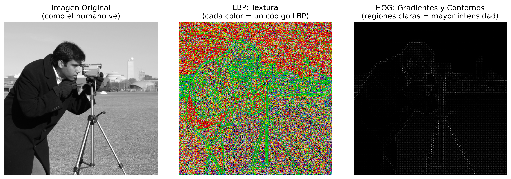
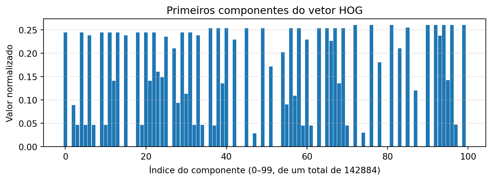
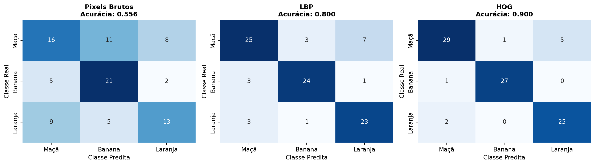
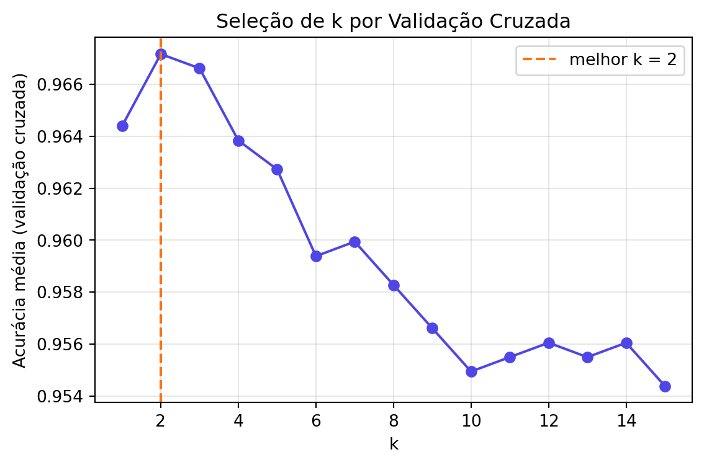
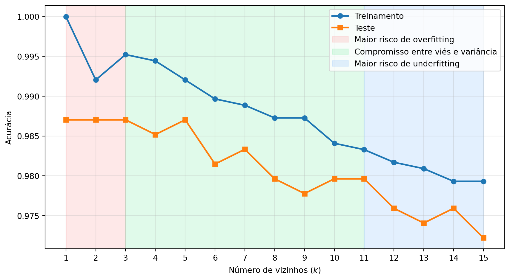
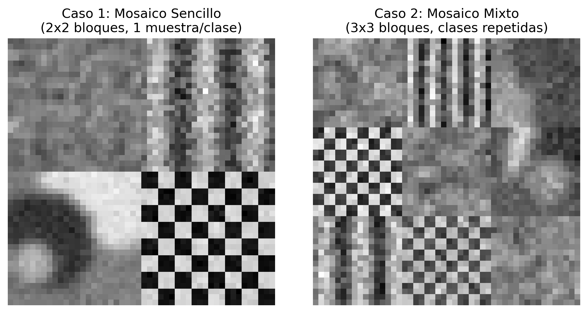

7Clasificación de Imágenes y Reconocimiento de Patrones
En el Capítulo 6, la transición de la Parte I a la Parte II se presentó mediante dos aplicaciones que ya requerían decisiones automatizadas: el reconocimiento de marcas en hojas de respuesta (OMR) y la detección de defectos en inspección industrial. En ambos casos, sin embargo, las decisiones dependían de reglas geométricas y de umbrales definidos manualmente, como determinar si un disco era suficientemente circular o si una región era lo bastante oscura.
Este capítulo formaliza el problema más general subyacente a estas aplicaciones: dado un conjunto de ejemplos etiquetados, ¿cómo entrenar un sistema para clasificar automáticamente nuevas imágenes o regiones de interés? Esta cuestión se encuentra en el núcleo del Reconocimiento de Patrones, disciplina que fundamenta gran parte de las tareas modernas de Visión Computacional, desde la clasificación de imágenes hasta la detección de objetos y la segmentación semántica, exploradas en los próximos capítulos.
Se estudiarán los principales descriptores clásicos de imagen (color, textura y forma/gradiente) y el clasificador k-Vecinos más Cercanos (k-Nearest Neighbors — k-NN), elegido por su simplicidad conceptual y por evidenciar, de forma directa, la relación entre el espacio de características, las métricas de distancia y las fronteras de decisión — conceptos que permanecen centrales incluso en clasificadores basados en redes neuronales profundas, estudiados en el capítulo final de esta parte.
7.1 Objetivos del Capítulo
Al final de este capítulo, el estudiante deberá ser capaz de:
Comprender el pipeline clásico de reconocimiento de patrones: adquisición, preprocesamiento, extracción de descriptores, clasificación y evaluación;
Extraer e interpretar descriptores clásicos de color, textura (Local Binary Patterns — LBP) y forma/gradiente (Histogram of Oriented Gradients — HOG);
Implementar y entrenar un clasificador k-NN para tareas de clasificación de imágenes;
Evaluar clasificadores mediante métricas como exactitud, matriz de confusión, precisión y recuperación;
Analizar el efecto del parámetro k y de la dimensionalidad del espacio de características en el rendimiento del clasificador;
Reconocer las limitaciones de los descriptores artesanales (hand-crafted features) y comprender la motivación para la transición, en los próximos capítulos, hacia descriptores aprendidos automáticamente.
7.2 Configuración del Entorno
Los ejemplos de este capítulo utilizan bibliotecas ampliamente empleadas en Procesamiento Digital de Imágenes, Visión por Computadora y Aprendizaje Automático. El bloque siguiente instala los paquetes necesarios; en entornos que ya los tengan, la ejecución puede omitirse.
import os, urllib.requesturl ="https://raw.githubusercontent.com/fzampirolli/pdi-vc/master/morph/config.py"ifnot os.path.exists("config.py"): urllib.request.urlretrieve(url, "config.py")import configconfig.setup()from morph import mmimport importlibimport subprocessimport sysdef setup_cap07():"""Instala bibliotecas ausentes necesarias para este capítulo (visión computacional y aprendizaje automático).""" pacotes = {"cv2": "opencv-python","skimage": "scikit-image","numpy": "numpy","sklearn": "scikit-learn","matplotlib": "matplotlib","pandas": "pandas","seaborn": "seaborn","tabulate": "tabulate","kaleido": "kaleido", }for modulo, pacote in pacotes.items():if importlib.util.find_spec(modulo) isNone: resultado = subprocess.run( [sys.executable, "-m", "pip", "install", "-q", pacote] )if resultado.returncode !=0:print(f"[AVISO] Error al instalar {pacote} (necesario para el módulo {modulo}).")setup_cap07()# ==========================================================# Bibliotecas# ==========================================================# Computación científicaimport numpy as npimport pandas as pd# Visualizaciónimport matplotlib.cm as cmimport matplotlib.pyplot as pltimport seaborn as sns# Visión computacionalimport cv2from skimage import data as skdatafrom skimage.feature import hog, local_binary_pattern# Aprendizaje automáticofrom sklearn.datasets import load_digits, make_classificationfrom sklearn.model_selection import cross_val_score, train_test_splitfrom sklearn.neighbors import KNeighborsClassifierfrom sklearn.ensemble import RandomForestClassifierfrom sklearn.preprocessing import StandardScalerfrom sklearn.metrics import ( accuracy_score, classification_report, confusion_matrix, f1_score, precision_score, recall_score,)
✅ Entorno listo. Morph: 1.1.9 | OpenCV: 5.0.0
7.3 Un Problema Concreto: Clasificación de Frutas
Antes de presentar los fundamentos teóricos, considere el siguiente problema, que se utilizará como ejemplo a lo largo de este capítulo para ilustrar los principales conceptos del reconocimiento de patrones.
El escenario: Una granja automatizada utiliza un sistema de Visión Computacional para separar manzanas, plátanos y naranjas en líneas de envasado.
El desafío: Las frutas llegan a la cinta en diferentes posiciones y orientaciones, bajo condiciones de iluminación que pueden variar. Además, las hojas, las sombras y las pequeñas oclusiones pueden dificultar su identificación. ¿Cómo desarrollar un sistema capaz de clasificarlas correctamente?
Un posible enfoque:
Extraer descriptores que representen características relevantes de las frutas:
Color: distribución predominante de los colores;
Textura: diferencias en la superficie de la cáscara;
Forma: características geométricas del contorno.
Entrenar un clasificador utilizando ejemplos previamente etiquetados.
Utilizar el modelo entrenado para clasificar automáticamente nuevas frutas.
La Figura 7.1 ilustra, de forma conceptual, cómo diferentes frutas pueden representarse en un espacio de características tridimensional.
TipReflexiona antes de continuar
Si cada fruta se representara únicamente por los valores de intensidad de sus píxeles, ¿sería posible distinguirlas de manera fiable? ¿Qué tipo de información podría extraerse de la imagen para facilitar esta tarea?
Figura 7.1: Ejemplo motivacional: diferentes frutas formando agrupaciones distintas en un espacio de características.
7.4 🗺️ Panorama del Capítulo: El Pipeline Clásico de Clasificación de Imágenes
Antes de continuar, resulta útil presentar una visión integrada de lo que se estudiará. La Figura 8.1 muestra el flujo general de un sistema clásico de clasificación de imágenes, desde la imagen de entrada hasta la etapa de asignación de la etiqueta final. En las próximas secciones, cada una de las etapas de este proceso se estudiará en detalle.
Figura 7.2: Panorama del pipeline clásico de clasificación de imágenes: extracción de descriptores (LBP, HOG), formación del espacio de características y clasificación mediante k-NN. No se aplica a modelos de Aprendizaje Profundo (CNNs, YOLO), que aprenden features de extremo a extremo directamente de los píxeles. Fuente: elaborado con ayuda de Gemini Notebook ({GOOGLE}, 2025).
NotaAlcance de este capítulo
En este capítulo, el enfoque recae exclusivamente sobre el clasificador k-NN, por su simplicidad didáctica y por ilustrar de forma intuitiva el concepto de espacio de características. Otros clasificadores tradicionales ampliamente utilizados en Reconocimiento de Patrones — como Árboles de Decisión, Reglas de Clasificación y Máquinas de Vectores de Soporte (SVM) — se discuten en profundidad en Quilici-gonzalez (2014), especialmente en su 2ª edición, actualmente en producción (QUILICI-GONZALEZ, 2026).
7.5 Fundamentos del Reconocimiento de Patrones
Un sistema de reconocimiento de patrones tiene como objetivo asignar una categoría (etiqueta) a una observación — una imagen completa, una región de interés o una señal — con base en ejemplos previamente etiquetados. De forma general, este proceso se organiza en las siguientes etapas:
Adquisición: obtención de la imagen o de la señal que se va a clasificar;
Preprocesamiento: normalización, eliminación de ruido, corrección geométrica o de iluminación — etapas ya estudiadas en los capítulos anteriores;
Extracción de descriptores (features): transformación de la imagen en un vector de características de dimensión fija, que representa las propiedades relevantes para la tarea de clasificación;
Clasificación: aplicación de un modelo que asocia el vector de características a una clase;
Evaluación: análisis del rendimiento del modelo en un conjunto de datos independiente de aquel utilizado para el entrenamiento.
El conjunto de todos los vectores de características posibles constituye el espacio de características (feature space). Un buen descriptor produce representaciones que aproximan, en ese espacio, observaciones de la misma clase y alejan observaciones de clases distintas. Esta propiedad favorece métodos de clasificación basados en proximidad, como el k-NN, y también beneficia a diversos otros clasificadores.
La Figura 7.1 ilustra este concepto de forma esquemática: cada fruta se representa mediante un punto en un espacio de características de tres dimensiones (color, textura y forma). Aunque ese espacio sea solo una simplificación didáctica, muestra cómo las muestras de la misma clase tienden a formar agrupaciones, mientras que clases diferentes ocupan regiones distintas, facilitando la tarea de clasificación.
7.6 Extracción de Descriptores Clásicos
Antes de la popularización de las redes neuronales profundas, los descriptores de imagen eran, en su mayoría, diseñados manualmente por expertos (hand-crafted features), con base en propiedades estadísticas o geométricas conocidas. Tres familias clásicas son particularmente relevantes:
Descriptores de color: histogramas de intensidad o de matiz, que capturan la distribución de los valores de color de una región, ya introducidos en el Capítulo 3 mediante la función mm.hist;
Descriptores de textura: capturan patrones locales de repetición, rugosidad u orientación, como el Local Binary Patterns (LBP), estudiado a continuación;
Descriptores de forma/gradiente: describen la distribución de los bordes y de las orientaciones del gradiente, como el Histogram of Oriented Gradients (HOG), ampliamente empleado en la detección de personas y otros objetos.
Para comparar la información capturada por cada enfoque, la Figura 7.3 muestra cómo diferentes técnicas “ven” la misma imagen.
# Cargar imagen de ejemploimagem = skdata.camera()# Aplicar descriptoreslbp_img = local_binary_pattern( imagem, P=8, R=1, method="uniform" )# Convertir el LBP a RGB solo para facilitar la visualizaciónlbp_norm = (lbp_img - lbp_img.min()) / (lbp_img.max() - lbp_img.min() +1e-8)lbp_rgb = (cm.nipy_spectral(lbp_norm)[..., :3] *255).astype("uint8")hog_features, hog_img = hog( imagem, orientations=9, pixels_per_cell=(8, 8), cells_per_block=(2, 2), visualize=True,)# Exhibición estandarizadamm.show( [imagem, lbp_rgb, hog_img], titles=["Imagen Original\n(como el humano ve)","LBP: Textura\n(cada color = un código LBP)","HOG: Gradientes y Contornos\n(regiones claras = mayor intensidad)", ], cols=3, figsize=(12, 4),)print("Observa cómo cada descriptor resalta propiedades diferentes:")print("• LBP: evidencia patrones locales de textura.")print("• HOG: evidencia contornos y orientaciones de los bordes.")print("• Imagen original: contiene solo los valores de intensidad.")

Figura 7.3: Comparación visual de diferentes descriptores aplicados a la misma imagen. Cada descriptor revela aspectos distintos de la escena.
Observa cómo cada descriptor resalta propiedades diferentes:
• LBP: evidencia patrones locales de textura.
• HOG: evidencia contornos y orientaciones de los bordes.
• Imagen original: contiene solo los valores de intensidad.
7.6.1Local Binary Patterns (LBP)
El LBP es un descriptor de textura que codifica, para cada píxel central \(g_c\), la relación entre su intensidad y la de los \(P\) vecinos dispuestos en una vecindad circular de radio \(R\):
\((x_c, y_c)\) son las coordenadas del píxel central;
\(g_c\) es la intensidad del píxel central;
\(g_p\) es la intensidad del \(p\)-ésimo píxel vecino;
\(P\) es el número de vecinos considerados;
\(R\) es el radio de la vecindad circular;
\(p\) es el índice del vecino, con \(p = 0, 1, \ldots, P-1\);
\(s(z)\) es la función de umbral definida en la ecuación, donde \(z = g_p - g_c\); toma el valor 1 cuando \(z \geq 0\) y 0 cuando \(z < 0\);
\(2^p\) corresponde al peso binario asociado al \(p\)-ésimo vecino.
El código LBP obtenido describe el patrón local de contraste alrededor del píxel. El histograma de estos códigos forma un vector de características compacto para representar la textura de la imagen (Figura 7.4). En este capítulo se utiliza la variante uniforme, que agrupa los patrones no uniformes en una única categoría, reduciendo la dimensionalidad y aumentando la robustez del descriptor.
Figura 7.4: Histograma de los códigos LBP de la imagen de los camarógrafos. Cada barra representa la frecuencia relativa de un código LBP, formando el vector de características utilizado para describir la textura.
TipFunción local_binary_pattern
La implementación utilizada en este capítulo es proporcionada por la biblioteca scikit-image:
P: número de vecinos igualmente espaciados en la vecindad circular;
R: radio de la vecindad, en píxeles;
method: estrategia de codificación. En este capítulo se utiliza el valor "uniform".
La ecuación presentada anteriormente describe el LBP original. En la implementación adoptada en este capítulo, la opción method="uniform" calcula inicialmente ese código y, a continuación, reasigna los patrones no uniformes a una única categoría, reduciendo la dimensionalidad del descriptor y haciéndolo más robusto ante pequeñas variaciones locales.
La Figura 7.3 presenta la representación visual del LBP, mientras que la Figura 7.4 muestra el histograma de los códigos LBP utilizado como vector de características.
El Proyecto Práctico 2 (sección Comparación de Descriptores para Clasificación de Texturas) emplea el LBP en la clasificación de diferentes tipos de textura sintética.
7.6.2Histograma de Gradientes Orientados (HOG)
El HOG es un descriptor que representa la forma de un objeto mediante la distribución de las orientaciones del gradiente local. Así como en el operador de Canny (Capítulo 6), inicialmente se calcula el gradiente:
\(f(x,y)\) es la intensidad de la imagen en el píxel \((x,y)\);
\(\frac{\partial f}{\partial x}\) y \(\frac{\partial f}{\partial y}\) son, respectivamente, las derivadas parciales de la imagen en las direcciones horizontal y vertical;
\(|\nabla f(x,y)|\) es la magnitud del vector gradiente en el píxel \((x,y)\), que indica la intensidad de la variación local de la imagen;
\(\theta(x,y)\) es la orientación del vector gradiente en el píxel \((x,y)\), calculada mediante la función \(\operatorname{atan2}\), cuyo resultado pertenece al intervalo \((-\pi,\pi]\).
Aunque \(\theta(x,y)\), tal como se calcula con la función \(\operatorname{atan2}\), pertenece al intervalo \((-\pi,\pi]\), la implementación estándar del HOG utiliza el gradiente no signado (unsigned): las orientaciones opuestas (por ejemplo, \(0\) y \(\pi\)) se tratan como equivalentes, y los ángulos se mapean al intervalo \([0,\pi)\) antes de construir el histograma. Esta elección hace que el descriptor sea invariante a la dirección del contraste (por ejemplo, un borde claro-oscuro y un borde oscuro-claro producen la misma orientación).
La imagen se divide entonces en celdas (cells). Para cada celda, se construye un histograma de las orientaciones del gradiente, ponderado por la magnitud correspondiente. La concatenación de los histogramas de todas las celdas forma el vector de características HOG, que representa la distribución espacial de las orientaciones del gradiente y captura información sobre la forma y los contornos del objeto (Figura 7.5).
n =100plt.figure(figsize=(8, 3))plt.bar(range(n), hog_features[:n], width=0.9)plt.title("Primeiros componentes do vetor HOG")plt.xlabel(f"Índice do componente (0–{n-1}, de um total de {hog_features.shape[0]})")plt.ylabel("Valor normalizado")plt.grid(axis="y", alpha=0.3)plt.tight_layout()plt.show()

Figura 7.5: Primeros 100 componentes del vector de características HOG.
TipFunción hog
La extracción del descriptor HOG se realiza mediante la función:
orientations: número de divisiones angulares del histograma de orientaciones en cada celda;
pixels_per_cell: tamaño, en píxeles, de cada celda donde se calcula el histograma;
cells_per_block: número de celdas utilizadas en la normalización del descriptor;
visualize: cuando es True, devuelve también una imagen que ilustra los gradientes utilizados por el HOG.
La ecuación presentada anteriormente describe el cálculo de la magnitud y la orientación del gradiente, que constituyen la base del descriptor HOG. En la implementación adoptada en este capítulo, la función hog() utiliza esta información para construir histogramas de orientaciones en cada celda de la imagen y, a continuación, realiza la normalización en bloques (cells_per_block), reduciendo la sensibilidad del descriptor a variaciones de iluminación y contraste.
La Figura 7.3 presenta la representación visual del HOG, mientras que la Figura 7.5 ilustra los primeros componentes del vector de características extraído de la imagen.
El Proyecto Práctico 1 (sección Clasificación de Dígitos Manuscritos con k-NN) compara el rendimiento de los descriptores HOG con el uso directo de las intensidades de los píxeles como vector de características.
7.6.3 El Impacto de la Escala y la Normalización de Características
El clasificador \(k\)-NN toma sus decisiones basándose en la distancia entre los vectores de características. Por ello, la escala de cada característica influye directamente en el resultado de la clasificación. Si una variable presenta valores mucho mayores que las demás (por ejemplo, una intensidad de color que varía de \(0\) a \(255\), mientras que un índice de circularidad varía de \(0\) a \(1\)), tiende a dominar el cálculo de la distancia, reduciendo la influencia de los otros descriptores.
Para evitar este problema, se aplica una etapa de normalización de las características, generalmente mediante la estandarización (Z-score standardization). En este procedimiento, cada característica pasa a tener media igual a cero y desviación estándar igual a uno, haciendo comparables magnitudes originalmente medidas en escalas diferentes.
La estandarización se realiza mediante la transformación
\[
z = \frac{x - \mu}{\sigma},
\]
donde:
\(x\) es el valor original de la característica;
\(\mu\) es la media de esa característica calculada sobre el conjunto de entrenamiento;
\(\sigma\) es la desviación estándar de la característica;
\(z\) es el valor estandarizado.
Después de esta transformación, todas las características pasan a tener media igual a cero y desviación estándar igual a uno, permitiendo que contribuyan de forma equilibrada al cálculo de las distancias.
TipClase StandardScaler
La estandarización utilizada en este capítulo se realiza mediante la clase StandardScaler, de la biblioteca scikit-learn:
from sklearn.preprocessing import StandardScalerscaler = StandardScaler()X_norm = scaler.fit_transform(X)
donde:
StandardScaler(): crea el objeto responsable de la estandarización;
fit_transform(X): calcula la media y la desviación estándar de cada característica del conjunto X y devuelve la matriz estandarizada.
En la práctica, el método fit_transform() ejecuta dos etapas: primero (fit), estima la media (\(\mu\)) y la desviación estándar (\(\sigma\)) de cada característica; a continuación (transform), aplica la transformación de estandarización presentada anteriormente a todos los valores de la matriz de entrada.
La Figura 7.6 muestra el efecto de la normalización. Visualmente, la distribución de los puntos permanece igual; lo que cambia es la escala de los ejes. Sin la normalización, la característica de mayor magnitud domina el cálculo de las distancias entre las muestras. Tras la estandarización, todas las características pasan a contribuir de forma equilibrada al cálculo de las distancias utilizadas por el clasificador \(k\)-NN.
# Datos sintéticos con escalas muy diferentesnp.random.seed(42)X_demo = np.random.randn(20, 2) * [100, 1]y_demo = np.array([0] *10+ [1] *10)print("Efecto de la normalización:")print(" Característica 1: escala ≈ 100")print(" Característica 2: escala ≈ 1")print("\nSin normalización, la primera característica domina el cálculo de las distancias.")print("Con normalización, ambas contribuyen de forma equilibrada.")print("\nLa normalización es esencial cuando las características poseen escalas diferentes.")fig, axes = plt.subplots(1, 2, figsize=(10, 4))# Sin normalizaciónaxes[0].scatter( X_demo[y_demo ==0, 0], X_demo[y_demo ==0, 1], c="blue", label="Classe 0")axes[0].scatter( X_demo[y_demo ==1, 0], X_demo[y_demo ==1, 1], c="red", label="Classe 1")axes[0].set_title("Sem Normalização\n(escalas diferentes)")axes[0].set_xlabel("Característica 1 (escala 100)")axes[0].set_ylabel("Característica 2 (escala 1)")axes[0].legend()# Con normalizaciónscaler = StandardScaler()X_norm = scaler.fit_transform(X_demo)axes[1].scatter( X_norm[y_demo ==0, 0], X_norm[y_demo ==0, 1], c="blue", label="Classe 0")axes[1].scatter( X_norm[y_demo ==1, 0], X_norm[y_demo ==1, 1], c="red", label="Classe 1")axes[1].set_title("Com Normalização\n(características balanceadas)")axes[1].set_xlabel("Característica 1")axes[1].set_ylabel("Característica 2")axes[1].legend()plt.tight_layout()plt.show()
Efecto de la normalización:
Característica 1: escala ≈ 100
Característica 2: escala ≈ 1
Sin normalización, la primera característica domina el cálculo de las distancias.
Con normalización, ambas contribuyen de forma equilibrada.
La normalización es esencial cuando las características poseen escalas diferentes.
Figura 7.6: Importancia de la normalización de las características para el clasificador k-NN.
7.7 📌 Mapa Conceptual
Hasta aquí, se han presentado los descriptores clásicos (LBP, HOG, píxeles brutos) y la forma en que organizan las muestras en un espacio de características. La Figura 7.7 sintetiza ese recorrido y sitúa estas etapas dentro del flujo general de un sistema clásico de clasificación de imágenes, indicando también las etapas siguientes — clasificación (k-NN) y evaluación de los resultados — que se formalizarán en las próximas secciones.
Figura 7.7: Mapa conceptual del proceso de clasificación de imágenes utilizando descriptores clásicos (LBP, HOG, píxeles brutos) y clasificador tradicional (k-NN). No se aplica a modelos de Aprendizaje Profundo (CNNs, YOLO), que aprenden features end-to-end directamente de los píxeles.
7.8 Descriptores en la Práctica
Tras conocer los principales descriptores clásicos, es natural preguntarse cómo influyen en el rendimiento de un clasificador en situaciones cercanas a las que se encuentran en la práctica.
En esta sección, se compara el uso de tres representaciones distintas de las mismas imágenes: intensidades de los píxeles, descriptores LBP y descriptores HOG. Para hacer el experimento más realista, se añade ruido sintético a los datos, en intensidades diferentes para cada descriptor — una forma simplificada de simular el hecho de que, en la práctica, diferentes representaciones toleran de manera desigual las imperfecciones de la captura (ruido del sensor, pequeñas variaciones de posición, etc.).
La Figura 7.8 presenta las matrices de confusión obtenidas para cada descriptor, permitiendo identificar en qué clases ocurren los principales errores de clasificación. La interpretación de estas matrices fue introducida en el Capítulo 1, cuando se presentaron los conceptos de Verdadero Positivo (VP), Falso Positivo (FP), Verdadero Negativo (VN) y Falso Negativo (FN). Estos conceptos fueron explorados en los EPs 01_02 (métricas de clasificación) y 01_03 (mean Average Precision – mAP), disponibles en:
En este capítulo, las matrices de confusión se emplean para analizar cómo diferentes descriptores influyen en el rendimiento del clasificador.
A continuación, la Figura 7.9 resume la precisión global obtenida por cada descriptor.
Los resultados muestran que el rendimiento del clasificador depende directamente de la representación elegida para describir las imágenes. Mientras que el uso directo de las intensidades de los píxeles es más sensible a las degradaciones introducidas, los descriptores LBP y HOG preservan mejor la información relevante para la clasificación, resultando en un mayor rendimiento en este escenario. Es importante resaltar que los niveles de ruido aplicados a cada descriptor fueron elegidos solo con fines didácticos, de modo que ilustren el principio general de que descriptores más elaborados pueden ser más robustos a degradaciones — lo que no significa que esta relación se verifique siempre, como el estudio de caso de la próxima sección demostrará.
TipCómo se realiza el experimento
Dado que el objetivo de esta sección es comparar únicamente el efecto de los descriptores, se genera un conjunto de datos sintético simple: tres nubes de puntos gaussianas, centradas en los mismos valores de “color, textura y forma” ya utilizados en la Figura 7.1 — el mismo patrón empleado desde el inicio del capítulo para representar las tres clases de frutas.
centros = {"Maçã": [0.8, 0.2, 0.9],"Banana": [0.3, 0.1, 0.2],"Laranja": [0.9, 0.8, 0.8],}n_por_classe =100X = np.vstack([ np.random.normal(centro, 0.12, (n_por_classe, 3))for centro in centros.values()])y = np.repeat(list(centros.keys()), n_por_classe)
donde:
centros: diccionario con el punto medio de cada clase en el espacio de características (color, textura, forma);
n_por_classe: número de muestras generadas por clase;
np.random.normal(centro, 0.12, (n_por_classe, 3)): genera n_por_classe muestras alrededor de cada centro, con desviación estándar 0,12 en cada dimensión;
np.repeat(list(centros.keys()), n_por_classe): genera el vector de etiquetas correspondiente, en el mismo orden que los centros.
A continuación, se utiliza el flujo de entrenamiento y evaluación:
train_test_split(X, y, test_size=0.3): divide los datos en entrenamiento (70%) y prueba (30%);
KNeighborsClassifier(n_neighbors=5): crea un clasificador \(k\)-NN con \(k=5\) vecinos;
fit(X_train, y_train): ajusta el modelo a los datos de entrenamiento;
predict(X_test): clasifica las muestras de prueba;
accuracy_score(y_test, y_pred): calcula la precisión;
confusion_matrix(y_test, y_pred): genera la matriz de confusión.
En este experimento, el conjunto de entrenamiento, el clasificador y el método de evaluación permanecen exactamente los mismos. La única diferencia entre los experimentos es la representación utilizada para cada imagen (píxeles brutos, LBP o HOG), lo que permite evaluar exclusivamente la influencia del descriptor sobre el rendimiento del clasificador.
classes = ["Maçã", "Banana", "Laranja"]np.random.seed(42)# Mismos centros de clase (color, textura, forma) utilizados en el# ejemplo anterior, ahora reutilizados para generar los datos# sintéticos de entrenamiento y prueba de este experimento.centros = {"Maçã": [0.8, 0.2, 0.9],"Banana": [0.3, 0.1, 0.2],"Laranja": [0.9, 0.8, 0.8],}n_por_classe =100X = np.vstack([ np.random.normal(centro, 0.12, (n_por_classe, 3))for centro in centros.values()])y = np.repeat(list(centros.keys()), n_por_classe)# Simular descriptores con diferentes niveles de sensibilidad al ruido.# Cuanto mayor sea el ruido añadido, peor tiende a ser la representación.descritores = {"Pixels Brutos": X +0.5* np.random.randn(*X.shape),"LBP": X +0.3* np.random.randn(*X.shape),"HOG": X +0.2* np.random.randn(*X.shape),}# Crear una única figura con 3 subplots lado a lado para las matricesfig, axes = plt.subplots(1, 3, figsize=(14, 4))resultados = {}for idx, (nome, Xd) inenumerate(descritores.items()): X_train, X_test, y_train, y_test = train_test_split(Xd, y, test_size=0.3, random_state=42) knn = KNeighborsClassifier(n_neighbors=5) knn.fit(X_train, y_train) y_pred = knn.predict(X_test) acc = accuracy_score(y_test, y_pred) resultados[nome] = acc# Matriz de confusión en el subplot correspondiente cm = confusion_matrix(y_test, y_pred, labels=classes) sns.heatmap( cm, annot=True, fmt="d", cmap="Blues", cbar=False, xticklabels=classes, yticklabels=classes, ax=axes[idx], ) axes[idx].set_title(f"{nome}\nAcurácia: {acc:.3f}", fontsize=11, fontweight="bold" ) axes[idx].set_xlabel("Classe Predita") axes[idx].set_ylabel("Classe Real")plt.tight_layout()plt.show()

Figura 7.8: Matrices de confusión obtenidas por el clasificador k-NN utilizando tres descriptores diferentes. Las filas representan la clase real (Manzana, Plátano y Naranja) y las columnas la clase predicha. Cuanto mayor sea la concentración de valores en la diagonal principal, mejor será el desempeño del descriptor.
# Comparación visual en una figura aisladaplt.figure(figsize=(6, 3.5))nomes =list(resultados.keys())acuracia =list(resultados.values())colors = ['#6366f1', '#f97316', '#22c55e']bars = plt.bar(nomes, acuracia, color=colors, width=0.5)plt.ylabel('Acurácia Global')plt.title('Desempenho Geral dos Descritores sob Ruído Realista', fontsize=12, fontweight='bold')plt.ylim(0.5, 1.0)plt.grid(axis='y', linestyle='--', alpha=0.5)# Agregar los valores encima de las barras usando round estándar para visualizaciónfor bar, val inzip(bars, acuracia): plt.text(bar.get_x() + bar.get_width()/2, bar.get_height() +0.01,f'{val:.3f}', ha='center', fontweight='bold', fontsize=10)plt.tight_layout()plt.show()print("Análisis de los resultados:")print("- Píxeles Brutos: Sensibles a variaciones locales de iluminación y ruido.")print("- LBP: Buena tolerancia para variaciones monótonas de iluminación global.")print("- HOG: Excelente para contornos y formas estables bajo pequeñas fluctuaciones geométricas.")
Figura 7.9: Comparación detallada de precisión global en escenario realista. Observe cómo los descriptores extraídos estructuralmente (LBP y HOG) superan el uso de intensidades puras de píxeles brutos.
Análisis de los resultados:
- Píxeles Brutos: Sensibles a variaciones locales de iluminación y ruido.
- LBP: Buena tolerancia para variaciones monótonas de iluminación global.
- HOG: Excelente para contornos y formas estables bajo pequeñas fluctuaciones geométricas.
7.9 Un Problema Concreto: Simulando Descriptores de Frutas
Retomando el problema de clasificación de frutas presentado al inicio del capítulo, cada imagen puede representarse mediante un vector de características (feature vector) obtenido a partir de la extracción de descriptores de color, textura y forma. La Tabla 7.1 presenta algunos descriptores frecuentemente utilizados en aplicaciones de Visión por Computador, incluyendo técnicas introducidas en el Capítulo 3 y en este capítulo.
Tabla 7.1: Conjunto de descriptores cromáticos, texturales y geométricos utilizados para representar imágenes de frutas.
Característica
Descripción
R, G, B
intensidad media de los canales rojo, verde y azul
NC
intensidad media en niveles de gris (grayscale)
LBP
descriptor de textura (Local Binary Pattern)
HOG
descriptor de forma (Histogram of Oriented Gradients)
Área
número de píxeles del objeto
Perímetro
longitud del contorno
Circularidad
medida de cuán circular es el objeto
Relación ancho/alto
proporción entre ancho y alto de la región
En este ejemplo, cada imagen se representa mediante el vector
En la práctica, LBP y HOG no son valores escalares, sino histogramas con decenas o centenas de componentes. En esta sección, cada uno de ellos se representa mediante un único valor solo para simplificar la presentación. En aplicaciones reales, esas posiciones serían sustituidas por las componentes completas de los respectivos histogramas.
En aplicaciones reales, no todos los descriptores contribuyen igualmente a distinguir las clases. Algunos proporcionan información más relevante, mientras que otros pueden ser redundantes o escasamente discriminativos.
Para reproducir este escenario de forma controlada, se utilizará make_classification(), de la biblioteca scikit-learn. La función genera un conjunto de datos sintético cuyas características pueden interpretarse como descriptores de imágenes, permitiendo definir cuántas de ellas serán informativas para la clasificación.
En este ejemplo, se generan diez características sintéticas, de las cuales solo siete (n_informative=7) participan en la separación entre las tres clases. Las restantes simulan atributos poco informativos o redundantes. La Figura 7.10 presenta una representación conceptual de este proceso.
Antes de introducir el algoritmo que se estudiará en detalle en este capítulo, cabe una observación: para identificar, entre las diez características sintéticas, cuáles son más discriminativas — y así seleccionar dos de ellas para la visualización en 2D —, se utiliza un Random Forest solo como herramienta auxiliar de diagnóstico. El KNN, foco de este capítulo, se presenta a continuación.
# Configuración para reproducciónnp.random.seed(42)# Generación de datos sintéticos con características controladasX, y = make_classification( n_samples=300, n_features=10, n_informative=7, n_redundant=2, n_repeated=1, # Una característica es copia de otra n_classes=3, n_clusters_per_class=1, random_state=42,)# Crear figura con dos subplotsfig, (ax1, ax2) = plt.subplots(1, 2, figsize=(14, 5))# Subplot 1: Visualización de las clases en 2D (usando dos características informativas)# Identificar cuáles características son más informativasrf = RandomForestClassifier(n_estimators=100, random_state=42)rf.fit(X, y)importancias = rf.feature_importances_caracteristicas_informativas = np.argsort(importancias)[-2:] # Dos más importantescores = {0: "#e74c3c", 1: "#f1c40f", 2: "#e67e22"} # Manzana, Banana, Naranjarotulos = {0: "Maçã", 1: "Banana", 2: "Laranja"}for classe inrange(3): idx = y == classe ax1.scatter(X[idx, caracteristicas_informativas[0]], X[idx, caracteristicas_informativas[1]], c=cores[classe], label=rotulos[classe], alpha=0.6, s=50, edgecolors="white", linewidth=0.5)ax1.set_xlabel(f"Característica {caracteristicas_informativas[0]+1} (informativa)", fontsize=11)ax1.set_ylabel(f"Característica {caracteristicas_informativas[1]+1} (informativa)", fontsize=11)ax1.set_title("Classes no Espaço de Características\n(2 características informativas)", fontsize=12, fontweight="bold")ax1.legend(loc="upper right")ax1.grid(alpha=0.3)# Subplot 2: Importancia de las característicasbars = ax2.bar(range(1, 11), importancias, color="#4a90d9", alpha=0.7)ax2.set_xlabel("Índice da Característica", fontsize=11)ax2.set_ylabel("Importância", fontsize=11)ax2.set_title("Importância de cada Característica\npara a Classificação", fontsize=12, fontweight="bold")ax2.set_xticks(range(1, 11))ax2.grid(axis="y", alpha=0.3)# Colorear barras para destacar característicascores_barras = ["#e74c3c"if i <7else"#95a5a6"for i inrange(10)]for bar, cor inzip(bars, cores_barras): bar.set_color(cor)# Añadir leyendafrom matplotlib.patches import Patchlegenda_elements = [ Patch(facecolor="#e74c3c", label="Características Informativas (7)"), Patch(facecolor="#95a5a6", label="Características Redundantes (3)")]ax2.legend(handles=legenda_elements, loc="upper right")# Anotar el número de características informativasax2.axhline(y=0.15, color="red", linestyle="--", alpha=0.3)ax2.text(0.5, 0.17, "Limiar de importância", fontsize=9, color="red", alpha=0.7)plt.tight_layout()plt.show()print("\n🔍 Análisis de los datos generados:")print(f" • Total de muestras: {X.shape[0]}")print(f" • Número de características: {X.shape[1]}")print(f" • Características informativas: 7 (columnas 1 a 7 del gráfico)")print(f" • Características redundantes: 2 (columnas 8 y 9)")print(f" • Características repetidas: 1 (columna 10)")print(f" • Distribución de las clases: {np.bincount(y)}")
Figura 7.10: Ilustración del proceso de generación de datos sintéticos con make_classification. A la izquierda, visualización de las tres clases en un espacio bidimensional formado por dos características informativas. A la derecha, importancia relativa de cada característica para la clasificación, evidenciando que solo 7 de las 10 características son efectivamente discriminativas, mientras que las demás son redundantes (2) o repetidas (1).
🔍 Análisis de los datos generados:
• Total de muestras: 300
• Número de características: 10
• Características informativas: 7 (columnas 1 a 7 del gráfico)
• Características redundantes: 2 (columnas 8 y 9)
• Características repetidas: 1 (columna 10)
• Distribución de las clases: [101 98 101]
7.10 Clasificador k-NN: Cómo Funciona por Dentro
El k-Nearest Neighbors (k-NN) es uno de los algoritmos de clasificación más simples e intuitivos del Aprendizaje Automático. A diferencia de muchos clasificadores, no construye explícitamente un modelo durante la etapa de entrenamiento. En su lugar, almacena las muestras etiquetadas y, cuando una nueva muestra necesita ser clasificada, busca aquellas que más se le parecen.
El principio del algoritmo se basa en la hipótesis de que las muestras con características similares tienden a pertenecer a la misma clase. Para cuantificar esta proximidad, el k-NN utiliza una medida de distancia entre los vectores de características.
Como ejemplo, considere la Tabla 7.2, que presenta una versión simplificada del problema de clasificación de frutas utilizando solo dos características: intensidad de color y circularidad, ambas normalizadas en el intervalo de 0 a 1.
Tabla 7.2: Ejemplo simplificado de clasificación de frutas utilizando dos características normalizadas.
Muestra
Color
Circularidad
Clase
Fruta 1
0,82
0,88
Manzana
Fruta 2
0,30
0,20
Plátano
Fruta 3
0,88
0,85
Manzana
Fruta ? (prueba)
0,80
0,90
?
Observando solo estas dos características, se percibe que la fruta de prueba está mucho más cerca de las muestras etiquetadas como Manzana que de la muestra etiquetada como Plátano. En la siguiente sección, esta noción intuitiva de proximidad se formalizará mediante una métrica de distancia, utilizada por el algoritmo para identificar los vecinos más cercanos y decidir la clase de la nueva muestra.
7.10.1 Métrica de Distancia
La proximidad entre dos muestras se cuantifica normalmente mediante la distancia euclidiana, definida por
\(x_i\) es una muestra del conjunto de entrenamiento;
\(n\) es el número de características;
\(x_j\) y \(x_{i,j}\) representan la \(j\)-ésima característica.
En la implementación de este capítulo, \(x\) corresponde a una fila de X_test y \(x_i\) a una fila de X_train. El método predict() calcula automáticamente la distancia entre \(x\) y todas las muestras de entrenamiento.
donde \(y_i\) es la etiqueta de la muestra \(x_i\) y \(\hat y\) es la clase asignada a la muestra de prueba.
En el ejemplo, para \(k=3\), los vecinos son Fruta 1 (Manzana), Fruta 3 (Manzana) y Fruta 2 (Banana). Como Manzana recibe dos votos, esa es la clase predicha.
TipClase KNeighborsClassifier
En este capítulo, el algoritmo se implementa con la clase KNeighborsClassifier, de la biblioteca scikit-learn:
from sklearn.neighbors import KNeighborsClassifierknn = KNeighborsClassifier(n_neighbors=3)knn.fit(X_train, y_train)y_pred = knn.predict(X_test)
donde:
KNeighborsClassifier(n_neighbors=3): define el valor de \(k\);
fit(X_train, y_train): almacena las muestras de entrenamiento (X_train) y sus etiquetas (y_train);
predict(X_test): devuelve las clases predichas para las muestras de X_test.
Internamente, predict() ejecuta los pasos descritos anteriormente: calcula las distancias, identifica los \(k\) vecinos más cercanos y determina la clase por votación mayoritaria.
La Figura 7.11 ilustra este procedimiento en un conjunto bidimensional. La figura destaca los vecinos utilizados en la clasificación, mientras que la consola presenta los pasos del algoritmo: cálculo de las distancias, ordenamiento, selección de los vecinos, votación y predicción de la clase.
def knn_passo_a_passo(X, y, x, k=3):"""Ejecuta los cinco pasos del algoritmo k-NN. Parámetros: X (entrenamiento), y (etiquetas), x (prueba) y k (número de vecinos). """# 1. Distancias dist = [(np.linalg.norm(x-xi), yi, i) for i, (xi, yi) inenumerate(zip(X, y))]print(f"1. Distancias calculadas: {len(dist)}")# 2. Ordenación dist.sort(key=lambda t: t[0])print("2. Distancias ordenadas")# 3. Selección vizinhos = dist[:k]print(f"3. {k} vecinos más cercanos:")for d, c, _ in vizinhos:print(f" {d:.4f} → {c}")# 4. Votación votos = {}for _, c, _ in vizinhos: votos[c] = votos.get(c, 0) +1print("4. Votos:", votos)# 5. Decisión classe =max(votos, key=votos.get)print("5. Clase predicha:", classe)return classe, vizinhos# Datos de ejemplonp.random.seed(4)X = np.r_[np.random.randn(15,2)+[2,2], np.random.randn(15,2)+[-2,-2]]y = np.array(["Classe A"]*15+ ["Classe B"]*15)x = np.array([0.5,0.5])classe, vizinhos = knn_passo_a_passo(X, y, x)# Visualizaciónplt.figure(figsize=(5,5))for c, rotulo in [("Classe A","Classe A"), ("Classe B","Classe B")]: P = X[y==c] plt.scatter(P[:,0], P[:,1], s=80, label=rotulo)plt.scatter(*x, marker="*", s=220, edgecolors="black", label="Teste")for _, _, i in vizinhos: plt.scatter(*X[i], s=220, facecolors="none", edgecolors="black", linewidths=2) plt.plot([x[0], X[i,0]], [x[1], X[i,1]], "--", lw=1)plt.xlabel("Característica 1")plt.ylabel("Característica 2")plt.title(f"k-NN ($k=3$): classe predita = {classe}")plt.legend()plt.grid(alpha=.3)plt.axis("equal")plt.tight_layout()plt.show()
1. Distancias calculadas: 30
2. Distancias ordenadas
3. 3 vecinos más cercanos:
1.0850 → Classe A
1.6379 → Classe B
1.6382 → Classe A
4. Votos: {np.str_('Classe A'): 2, np.str_('Classe B'): 1}
5. Clase predicha: Classe A
Figura 7.11: Clasificación de una nueva muestra por el algoritmo k-NN. El punto de prueba (estrella) se clasifica a partir de los tres vecinos más cercanos, resaltados por círculos.
7.10.3 El Papel del Parámetro \(k\)
El parámetro \(k\) determina cuántos vecinos participan en la decisión de clasificación.
Valores pequeños de \(k\) (por ejemplo, \(k=1\)) hacen que el clasificador sea más sensible a ruidos y variaciones locales, produciendo fronteras de decisión más irregulares y favoreciendo el sobreajuste.
Valores mayores de \(k\) producen fronteras de decisión más suaves, pero pueden reducir la sensibilidad a estructuras locales, favoreciendo el subajuste.
En problemas con dos clases, es común utilizar valores impares de \(k\) para reducir la ocurrencia de empates.
Otro aspecto importante es la maldición de la dimensionalidad (curse of dimensionality). A medida que el número de características aumenta, las distancias entre las muestras tienden a volverse más similares, dificultando la identificación de vecinos realmente representativos.
NotaResumen
El algoritmo k-NN puede resumirse en tres etapas:
extraer el vector de características de la nueva muestra;
identificar los \(k\) vecinos más cercanos;
clasificar la muestra por la clase más frecuente entre esos vecinos.
El simulador de la Figura 7.12 permite explorar visualmente el efecto del parámetro \(k\) sobre la frontera de decisión.
📌 Simulador: Frontera de Decisión del k-NNHaz clic en el lienzo para añadir puntos
Vecinos (k)
3
Clase Azul
0
Clase Roja
0
Clase Azul
Clase Roja
La región coloreada de fondo representa la clase asignada por el algoritmo a cada punto del espacio.
Figura 7.12: Simulador interactivo de la frontera de decisión del k-NN: añada puntos de entrenamiento y ajuste el valor de k para observar el efecto sobre la región de decisión.
7.11 Proyecto Práctico 1: Clasificación de Dígitos Manuscritos con k-NN
Las secciones anteriores presentaron el algoritmo k-NN mediante un ejemplo simplificado de clasificación de frutas, utilizando únicamente dos características. A continuación, el mismo algoritmo se aplica a un conjunto de datos de imágenes, en el cual cada muestra está representada por un vector de mayor dimensión.
Como estudio de caso, se utiliza la base pública load_digits, disponible en la biblioteca scikit-learn. Este conjunto de datos contiene 1797 imágenes de dígitos manuscritos de las clases de 0 a 9, cada una con una resolución de \(8 \times 8\) píxeles en niveles de gris. Cada imagen está representada por un vector con 64 características, correspondientes a las intensidades de los píxeles, y cada vector posee una etiqueta que indica el dígito correspondiente.
La base load_digits está disponible en la biblioteca scikit-learn y se utiliza en este capítulo para ilustrar la aplicación del algoritmo k-NN. Además de estar disponible directamente en scikit-learn, evita etapas adicionales de obtención y preparación de los datos, permitiendo concentrar la atención en la implementación y la evaluación del clasificador.
La Figura 7.13 presenta una muestra de las imágenes de la base de datos.
digits = load_digits()print(f"Total de muestras: {digits.data.shape[0]}, dimensión del vector: {digits.data.shape[1]}")print(f"Clases: {[int(i) for i insorted(set(digits.target))]}")n_amostras =16imgs =list(digits.images[:n_amostras])imgs_titles = [str(label) for label in digits.target[:n_amostras]]mm.show(imgs, titles=imgs_titles, cols=8, figsize=(12, 4))
Total de muestras: 1797, dimensión del vector: 64
Clases: [0, 1, 2, 3, 4, 5, 6, 7, 8, 9]
Figura 7.13: Muestra de dígitos manuscritos de la base load_digits, utilizada como caso de estudio de clasificación.
7.11.1 Clasificación con Vectores de Intensidad
En este primer experimento, cada imagen de dimensión \(8 \times 8\) se representa directamente mediante las intensidades de sus 64 píxeles, sin la extracción de descriptores adicionales. Así, cada muestra corresponde a un vector de 64 características, utilizado como entrada del clasificador k-NN.
A continuación, el conjunto de datos se divide en subconjuntos de entrenamiento y prueba, preservando la proporción de las diez clases mediante el parámetro stratify=y. El clasificador se entrena con \(k=3\) y se evalúa sobre el conjunto de prueba utilizando la exactitud y la matriz de confusión presentada en la Figura 7.14..
X, y = digits.data, digits.targetX_treino, X_teste, y_treino, y_teste = train_test_split( X, y, test_size=0.3, random_state=42, stratify=y)n_neighbors =3knn_pixels = KNeighborsClassifier(n_neighbors=n_neighbors)knn_pixels.fit(X_treino, y_treino)pred_pixels = knn_pixels.predict(X_teste)acc_pixels = accuracy_score(y_teste, pred_pixels)print(f"Precisión (vectores de intensidad, k={n_neighbors}): {acc_pixels:.4f}")cm = confusion_matrix(y_teste, pred_pixels)plt.figure(figsize=(5,4))plt.imshow(cm, cmap="Blues")for i inrange(cm.shape[0]):for j inrange(cm.shape[1]): plt.text( j, i, cm[i, j], ha="center", va="center", color="white"if cm[i, j] > cm.max()/2else"black", fontsize=9 )plt.title("Matriz de Confusão — Pixels Brutos")plt.xlabel("Classe Predita")plt.ylabel("Classe Real")plt.xticks(range(10))plt.yticks(range(10))plt.colorbar(fraction=0.046)plt.tight_layout()plt.show()
Precisión (vectores de intensidad, k=3): 0.9870
Figura 7.14: Matriz de confusión del clasificador k-NN entrenado con vectores de intensidad brutos (píxeles).
7.11.2 Clasificación con Descriptores HOG
En el experimento anterior, cada imagen fue representada directamente por las intensidades de sus píxeles. En esta sección, esa representación se sustituye por descriptores HOG (Histogram of Oriented Gradients), que codifican información sobre la distribución de las orientaciones de los gradientes de la imagen.
Se mantienen la misma partición de los datos, el mismo clasificador k-NN y el mismo protocolo de evaluación, cambiando únicamente la representación de las imágenes. La Figura 7.15 compara los resultados obtenidos con vectores de intensidad y con descriptores HOG.
descritores_hog = np.array([ hog(img, orientations=8, pixels_per_cell=(4, 4), cells_per_block=(1, 1))for img in digits.images])print(f"Dimensión del vector HOG: {descritores_hog.shape[1]}")Xh_treino, Xh_teste, yh_treino, yh_teste = train_test_split( descritores_hog, y, test_size=0.3, random_state=42, stratify=y)n_neighbors =3knn_hog = KNeighborsClassifier(n_neighbors=n_neighbors)knn_hog.fit(Xh_treino, yh_treino)pred_hog = knn_hog.predict(Xh_teste)acc_hog = accuracy_score(yh_teste, pred_hog)print(f"Precisión (descriptor HOG, k={n_neighbors}): {acc_hog:.4f}")plt.figure(figsize=(4, 3))plt.bar(["Pixels brutos", "HOG"], [acc_pixels, acc_hog], color=["#6366f1", "#f97316"])plt.ylim(0, 1.1) # Aumenta el límite superior para dar espacioplt.ylabel("Acurácia")plt.title("Comparação de Descritores")for i, v inenumerate([acc_pixels, acc_hog]): plt.text(i, v +0.02, f"{v:.3f}", ha="center") # Aumenta el desplazamiento verticalplt.tight_layout()
Dimensión del vector HOG: 32
Precisión (descriptor HOG, k=3): 0.7593
Figura 7.15: Comparación de precisión entre descriptores de píxeles brutos y HOG para el clasificador k-NN (k=3) en la base de dígitos.
Nota¿Por qué sucede esto?
En Figura 7.15, el clasificador entrenado con vectores de intensidad de los píxeles alcanza una mayor exactitud (\(0.987\)) que aquel basado en descriptores HOG (\(0.759\)). Este resultado está relacionado con las características de la base load_digits.
Las imágenes poseen una resolución de solo \(8\times8\) píxeles, se encuentran aproximadamente centradas y presentan poca variación de iluminación, escala y orientación. En este escenario, las intensidades de los píxeles preservan prácticamente toda la información necesaria para distinguir las clases. En contraste, el HOG resume la imagen en histogramas de orientaciones de los gradientes, reduciendo parte del detalle espacial disponible en los píxeles originales.
Esta reducción de información puede dificultar la separación de dígitos visualmente similares, como 3 y 8 o 4 y 9, especialmente cuando la resolución de la imagen es baja.
En problemas con imágenes de mayor resolución o sujetas a variaciones de iluminación, posición, escala o pequeñas deformaciones, descriptores como el HOG tienden a representar mejor la estructura local de la imagen que los valores individuales de los píxeles. Así, este experimento ilustra un principio importante del Aprendizaje Automático: la representación de los datos debe elegirse de acuerdo con las características del problema y no por la complejidad del descriptor.
7.12 Evaluación de Clasificadores
En las secciones anteriores, la calidad del clasificador fue analizada mediante la exactitud y la matriz de confusión. En esta sección, estas herramientas se complementan con métricas utilizadas en la evaluación de modelos y con un procedimiento para seleccionar el valor del parámetro \(k\).
La exactitud corresponde a la proporción de muestras clasificadas correctamente. Aunque es una medida simple y ampliamente utilizada, puede ser insuficiente cuando las clases presentan distribuciones muy desbalanceadas.
A partir de la matriz de confusión — introducida en el Capítulo 1 y utilizada a lo largo de este capítulo — se pueden calcular métricas por clase, como precisión y exhaustividad:
donde \(VP\), \(FP\) y \(FN\) representan, respectivamente, el número de verdaderos positivos, falsos positivos y falsos negativos de la clase analizada. La precisión cuantifica la proporción de predicciones positivas correctas, mientras que la exhaustividad mide la capacidad del clasificador de identificar los ejemplos pertenecientes a la clase.
7.12.1 Elección de \(k\) por Validación Cruzada
En los experimentos anteriores, se adoptó \(k=3\) para ilustrar el funcionamiento del algoritmo. Sin embargo, este parámetro influye directamente en el desempeño del clasificador y, en la práctica, debe seleccionarse a partir de los datos.
Un enfoque ampliamente utilizado es la validación cruzada (cross-validation), en la cual el conjunto de entrenamiento se divide en particiones sucesivas para estimar el desempeño del modelo en datos no utilizados durante el entrenamiento.
El siguiente código calcula la precisión media obtenida por validación cruzada de cinco particiones (5-fold cross-validation) para diferentes valores de \(k\). La Figura 7.16 presenta los resultados, permitiendo identificar la región en la que el clasificador alcanza un mejor desempeño.
valores_k =range(1, 16)acuracias_medias = []for k in valores_k: modelo = KNeighborsClassifier(n_neighbors=k) scores = cross_val_score(modelo, X, y, cv=5) acuracias_medias.append(scores.mean())melhor_k =list(valores_k)[int(np.argmax(acuracias_medias))]print(f"Mejor valor de k encontrado: {melhor_k} (precisión media={max(acuracias_medias):.4f})")plt.figure(figsize=(6, 4))plt.plot(list(valores_k), acuracias_medias, marker="o", color="#4f46e5")plt.axvline(melhor_k, color="#f97316", linestyle="--", label=f"melhor k = {melhor_k}")plt.xlabel("k")plt.ylabel("Acurácia média (validação cruzada)")plt.title("Seleção de k por Validação Cruzada")plt.legend()plt.grid(alpha=0.3)plt.tight_layout()
Mejor valor de k encontrado: 2 (precisión media=0.9672)

Figura 7.16: Precisión media por validación cruzada (5 particiones) en función del parámetro k, para la base de dígitos con vectores de intensidad brutos.
7.12.2 El Compromiso entre Sesgo y Varianza: Diagnóstico de Overfitting y Underfitting
El hiperparámetro \(k\) influye en la complejidad de la frontera de decisión del clasificador k-NN y, en consecuencia, en su capacidad de generalización. En términos generales, valores pequeños de \(k\) hacen que el modelo sea más sensible a las muestras de entrenamiento, mientras que valores mayores producen fronteras de decisión más suaves.
Estos comportamientos están asociados con el compromiso entre sesgo (bias) y varianza (variance). Valores muy pequeños de \(k\) tienden a aumentar el riesgo de sobreajuste (overfitting), especialmente en conjuntos de datos ruidosos, mientras que valores muy grandes pueden llevar al subajuste (underfitting), reduciendo la capacidad del modelo para capturar estructuras locales de los datos.
Mientras que la Figura 7.16 presentó solo la precisión media obtenida mediante validación cruzada, la Figura 7.17 compara las precisiones de entrenamiento y de prueba para diferentes valores de \(k\). Las regiones resaltadas en el gráfico representan el comportamiento esperado del algoritmo: mayor riesgo de sobreajuste para valores pequeños de \(k\), una región intermedia que frecuentemente produce un buen equilibrio entre sesgo y varianza, y un mayor riesgo de subajuste para valores elevados de \(k\).
Sin embargo, estas regiones deben interpretarse solo como una referencia conceptual. El comportamiento observado depende de las características del conjunto de datos. En la base load_digits, por ejemplo, las imágenes presentan poca variabilidad y una buena separación entre las clases, de modo que valores pequeños de \(k\) pueden presentar un rendimiento similar —o incluso superior— a los demás, sin evidenciar un sobreajuste significativo.
k_values =range(1, 16)train_acc, test_acc = [], []for k in k_values: knn = KNeighborsClassifier(n_neighbors=k).fit(X_treino, y_treino) train_acc.append(accuracy_score(y_treino, knn.predict(X_treino))) test_acc.append(accuracy_score(y_teste, knn.predict(X_teste)))plt.figure(figsize=(9,5))plt.plot(k_values, train_acc, "o-", lw=2, label="Treinamento")plt.plot(k_values, test_acc, "s-", lw=2, label="Teste")plt.axvspan(1, 3, color="#fca5a5", alpha=.25, label="Maior risco de overfitting")plt.axvspan(3,11, color="#86efac", alpha=.25, label="Compromisso entre viés e variância")plt.axvspan(11,15, color="#93c5fd", alpha=.25, label="Maior risco de underfitting")plt.xlabel("Número de vizinhos ($k$)")plt.ylabel("Acurácia")plt.xticks(k_values)plt.grid(alpha=.3)plt.legend(loc="upper right")plt.tight_layout()plt.show()maior_acc =max(test_acc)melhores_k = [k for k, a inzip(k_values, test_acc) if np.isclose(a, maior_acc)]print("Interpretación")print("- Valores pequeños de k: mayor riesgo de overfitting.")print("- Valores intermedios: mejor compromiso entre sesgo y varianza.")print("- Valores grandes de k: mayor riesgo de underfitting.")print("\nLas regiones coloreadas representan tendencias generales;")print("el comportamiento observado depende del conjunto de datos.")print(f"\nMayor precisión en la prueba: {maior_acc:.3f}")print(f"Valores de k que alcanzaron esa precisión: {melhores_k}")

Figura 7.17: Precisión en los conjuntos de entrenamiento y prueba para diferentes valores de \(k\). Las regiones coloreadas representan, de forma conceptual, tendencias de comportamiento del clasificador: mayor riesgo de sobreajuste (rojo), compromiso entre sesgo y varianza (verde) y mayor riesgo de subajuste (azul).
Interpretación
- Valores pequeños de k: mayor riesgo de overfitting.
- Valores intermedios: mejor compromiso entre sesgo y varianza.
- Valores grandes de k: mayor riesgo de underfitting.
Las regiones coloreadas representan tendencias generales;
el comportamiento observado depende del conjunto de datos.
Mayor precisión en la prueba: 0.987
Valores de k que alcanzaron esa precisión: [1, 2, 3, 5]
7.13 Proyecto Práctico 2: Comparación de Descriptores para Clasificación de Texturas
En el Capítulo 6, la varianza local se utilizó como descriptor de textura para detectar anomalías en superficies industriales, distinguiendo muestras conformes y defectuosas. En este proyecto, el problema se reformula como una tarea de clasificación multiclase, en la cual diferentes representaciones de la imagen se utilizan como entrada para un clasificador.
Se considerarán tres tipos de descriptores: las intensidades de los píxeles, el Local Binary Patterns (LBP) y el Histogram of Oriented Gradients (HOG). Para cada representación, se extraerá un vector de características que servirá de entrada para el algoritmo de los \(k\) vecinos más cercanos (\(k\)-NN). Al final, se compararán las precisiones obtenidas por cada descriptor en las condiciones definidas para este experimento.
La evaluación se realizará mediante validación cruzada estratificada en cinco particiones (5-fold stratified cross-validation). En este procedimiento, el conjunto de datos se divide en cinco subconjuntos preservando la proporción entre las clases. En cada iteración, una partición se utiliza para prueba y las cuatro restantes para entrenamiento, repitiéndose el proceso hasta que todas las particiones hayan sido utilizadas como conjunto de prueba. Al término de las cinco ejecuciones, se calculan la precisión media y la desviación estándar para cada descriptor.
El conjunto de datos está compuesto por tres clases de texturas sintéticas: granular, obtenida a partir de ruido gaussiano suavizado; listada, formada por patrones sinusoidales periódicos; y manchada, compuesta por regiones circulares superpuestas. Para introducir variabilidad entre las muestras, todas las imágenes reciben una perturbación por ruido gaussiano de baja intensidad. La Figura 7.18 presenta ejemplos de las tres clases utilizadas en el experimento.
rng = np.random.default_rng(42)def gerar_textura(classe, tamanho=64, ruido=0.10):"""Genera una textura sintética de 64x64 perteneciente a una de las tres clases."""if classe =="granular": escala = rng.uniform(0.14, 0.22) img = rng.normal(0.5, escala, (tamanho, tamanho)) img = cv2.GaussianBlur(img.astype(np.float32), (3, 3), 0)elif classe =="listrada": n_periodos = rng.uniform(4, 8) amplitude = rng.uniform(0.22, 0.38) eixo_x = np.linspace(0, n_periodos * np.pi, tamanho) base =0.5+ amplitude * np.sin(eixo_x) img = np.tile(base, (tamanho, 1)).astype(np.float32) img += rng.normal(0, 0.09, (tamanho, tamanho)).astype(np.float32)elif classe =="manchada": img = np.full((tamanho, tamanho), 0.5, dtype=np.float32) n_manchas = rng.integers(5, 11)for _ inrange(n_manchas): cx, cy = rng.integers(0, tamanho, 2) raio =int(rng.integers(3, 11)) intensidade =float(rng.uniform(0.15, 0.9)) cv2.circle(img, (int(cx), int(cy)), raio, intensidade, -1) img = cv2.GaussianBlur(img, (5, 5), 0)else:raiseValueError(f"Classe desconhecida: {classe}") img = img + rng.normal(0, ruido, (tamanho, tamanho)).astype(np.float32) img = np.clip(img, 0, 1)return (img *255).astype(np.uint8)classes_textura = ["granular", "listrada", "manchada"]amostras = [gerar_textura(c) for c in classes_textura]mm.show(amostras, titles=classes_textura, cols=3, figsize=(9, 3))
Figura 7.18: Muestras sintéticas de las tres clases de textura utilizadas en el experimento de clasificación, generadas con ruido gaussiano y variabilidad intra-clase.
7.13.1Pipeline de Extracción de Características y Evaluación Comparativa
Para comparar el rendimiento de diferentes formas de representación de las imágenes, se generó un conjunto de datos balanceado que contiene 60 muestras para cada clase. A partir de este conjunto, se extrajeron tres tipos de vectores de características, cada uno representando aspectos distintos de la información visual:
Píxeles crudos: vector obtenido mediante el aplanamiento (flattening) de la matriz de intensidades de la imagen, resultando en un vector de \(64 \times 64 = 4096\) atributos;
Histograma LBP uniforme: histograma normalizado de las frecuencias de los patrones locales producidos por el operador LBP uniforme, compuesto por 10 atributos;
Descriptor HOG: vector formado por histogramas de gradientes orientados, que representan la distribución espacial de las orientaciones de los bordes, totalizando 128 atributos.
Como estos descriptores poseen escalas y dimensionalidades distintas, los vectores de características se estandarizan utilizando el StandardScaler, de modo que cada atributo presente media cero y desviación estándar unitaria. Esta etapa evita que atributos con mayor amplitud influyan desproporcionadamente en el cálculo de las distancias euclidianas empleado por el clasificador.
La evaluación se realiza utilizando el algoritmo \(k\)-NN con \(k=5\), bajo el mismo protocolo de validación cruzada estratificada en cinco particiones descrito en la sección anterior. La precisión media obtenida a lo largo de las cinco ejecuciones, ver Figura 7.19, proporciona una estimación más estable del rendimiento del clasificador, reduciendo la dependencia de una única división entre entrenamiento y prueba.
rng = np.random.default_rng(42)# 1. Generación de la base de datosX_bruto, X_lbp, X_hog, y_textura = [], [], [], []for classe in classes_textura:for _ inrange(60): img = gerar_textura(classe, ruido=0.10)# Extracción 1: Píxeles brutos X_bruto.append(img.ravel())# Extracción 2: Histograma LBP uniforme lbp = local_binary_pattern(img, P=8, R=1, method="uniform") hist_lbp, _ = np.histogram(lbp, bins=10, range=(0, 10), density=True) X_lbp.append(hist_lbp)# Extracción 3: Descriptor HOG feat_hog = hog(img, orientations=8, pixels_per_cell=(16, 16), cells_per_block=(1, 1)) X_hog.append(feat_hog) y_textura.append(classe)y_textura = np.array(y_textura)descritores = {"Pixels Brutos": np.array(X_bruto),"LBP (Textura)": np.array(X_lbp),"HOG (Forma)": np.array(X_hog)}# 2. Evaluación estadística mediante validación cruzada de 5 plieguesresultados_media = {}resultados_desvio = {}knn = KNeighborsClassifier(n_neighbors=5)scaler = StandardScaler()for nome, X_dados in descritores.items(): X_norm = scaler.fit_transform(X_dados) scores = cross_val_score(knn, X_norm, y_textura, cv=5, scoring="accuracy") resultados_media[nome] = scores.mean() resultados_desvio[nome] = scores.std()print(f"{nome:15s} -> Precisión Media: {scores.mean():.4f} (± {scores.std():.4f})")# 3. Trazado del gráfico comparativo formalplt.figure(figsize=(7, 4.5))nomes_desc =list(resultados_media.keys())medias =list(resultados_media.values())desvios =list(resultados_desvio.values())bars = plt.bar(nomes_desc, medias, yerr=desvios, capsize=6, color=["#6366f1", "#9333ea", "#f97316"], width=0.45, edgecolor="black", alpha=0.85)plt.ylabel("Acurácia Média (5-Fold CV)", fontsize=11)plt.title("Análise Comparativa de Descritores para Classificação de Texturas", fontsize=12, fontweight="bold")plt.ylim(0.3, 1.1)plt.grid(axis="y", linestyle="--", alpha=0.5)for bar in bars: h = bar.get_height() plt.text(bar.get_x() + bar.get_width()/2, h +0.03, f"{h:.3f}", ha="center", fontweight="bold")plt.tight_layout()plt.show()
Figura 7.19: Precisión media obtenida mediante validación cruzada (5-fold) para los descriptores de Píxeles Brutos, LBP y HOG aplicados a la base de texturas sintéticas.
Nota¿Por qué funciona? — LBP como representación de texturas
El descriptor LBP representa la textura de una imagen mediante un histograma normalizado que contabiliza la frecuencia de los patrones locales de intensidad. En lugar de almacenar directamente los valores de los píxeles o sus posiciones, esta representación resume la distribución de las microestructuras presentes en la imagen, produciendo un vector de características compacto.
En este experimento se compararon tres tipos de descriptores: píxeles brutos, LBP y HOG. Los vectores formados por los píxeles brutos preservan todas las intensidades de la imagen, pero también incorporan variaciones derivadas del ruido y de pequeños desplazamientos espaciales, lo que puede dificultar la comparación entre muestras mediante la distancia euclidiana.
El descriptor HOG representa la distribución de las orientaciones de los gradientes, siendo adecuado para describir formas y contornos. Dado que las imágenes utilizadas en este proyecto difieren principalmente por sus propiedades de textura, y no por la presencia de contornos bien definidos, esta representación tiende a capturar menos información discriminativa que el LBP.
En cambio, el LBP fue desarrollado específicamente para caracterizar patrones locales de textura. Su histograma describe la frecuencia de las microestructuras presentes en la imagen, independientemente de su posición exacta, haciendo que la representación sea menos sensible a pequeñas variaciones espaciales y a cambios monótonos de iluminación.
Aunque los histogramas de las diferentes clases presentan distribuciones distintas, el ruido gaussiano introducido en la generación de las imágenes aumenta la variabilidad entre muestras de la misma clase y puede producir regiones de solapamiento en el espacio de características. Como consecuencia, algunas texturas pueden ser confundidas por el clasificador. Aun así, cuando las características relevantes para distinguir las clases están asociadas a los patrones locales de textura, se espera que descriptores diseñados para ese fin, como el LBP, produzcan representaciones más informativas que aquellas basadas únicamente en las intensidades de los píxeles o en las orientaciones de los gradientes.
7.13.2 Diagnóstico Fino del Clasificador: Precisión, Exhaustividad y Puntuación F1
La exactitud resume el desempeño del clasificador en un único valor, pero no indica cómo se distribuye ese desempeño entre las diferentes clases. Para un análisis más detallado, se utilizan métricas calculadas individualmente para cada clase.
La precisión (precision) mide la proporción de muestras clasificadas como pertenecientes a una clase que realmente pertenecen a ella. La exhaustividad (recall) mide la proporción de muestras de la clase que fueron correctamente identificadas por el clasificador. La puntuación F1 corresponde a la media armónica entre precisión y exhaustividad, proporcionando un indicador que equilibra ambas medidas.
El informe también indica el soporte (support), es decir, el número de muestras de cada clase presentes en el conjunto de prueba. Esta información es importante para contextualizar las métricas, pues los resultados obtenidos sobre pocas muestras tienden a presentar una mayor variabilidad.
La Figura 7.20 presenta estas métricas para las tres clases de textura. En conjunto, permiten identificar diferencias de desempeño que no son evidentes solo a partir de la exactitud. Por ejemplo, una clase puede presentar alta precisión y menor exhaustividad, lo que indica que el clasificador comete pocos falsos positivos, pero deja de identificar parte de las muestras que realmente pertenecen a esa clase. Este tipo de análisis ayuda a comprender las limitaciones del modelo y a identificar posibles estrategias para su mejora.
X_lbp_data = np.array(X_lbp)y_textura_data = np.array(y_textura)# Realizar una división de entrenamiento/prueba para el informe detalladoXt_treino, Xt_teste, yt_treino, yt_teste = train_test_split( X_lbp_data, y_textura_data, test_size=0.3, random_state=42, stratify=y_textura_data)# Escalar los datosscaler = StandardScaler()Xt_treino_scaled = scaler.fit_transform(Xt_treino)Xt_teste_scaled = scaler.transform(Xt_teste)# Entrenar el clasificador k-NNknn_textura = KNeighborsClassifier(n_neighbors=5)knn_textura.fit(Xt_treino_scaled, yt_treino)y_pred = knn_textura.predict(Xt_teste_scaled)report = classification_report( yt_teste, y_pred, target_names=classes_textura, output_dict=True)print("=== INFORME DE CLASIFICACIÓN DETALLADO ===")print(f"{'Classe':<12}{'Precisão':>10}{'Revocação':>12}{'F1-score':>10}{'Suporte':>10}")for classe in classes_textura: r = report[classe]print(f"{classe:<12}{r['precision']:>10.2f}{r['recall']:>12.2f} "f"{r['f1-score']:>10.2f}{r['support']:>10.0f}")precision = precision_score(yt_teste, y_pred, average=None, labels=classes_textura)recall = recall_score(yt_teste, y_pred, average=None, labels=classes_textura)f1 = f1_score(yt_teste, y_pred, average=None, labels=classes_textura)fig, ax = plt.subplots(figsize=(10, 5))x = np.arange(len(classes_textura))width =0.25bars1 = ax.bar(x - width, precision, width, label='Precisão', color='#6366f1', alpha=0.8)bars2 = ax.bar(x, recall, width, label='Revocação', color='#f97316', alpha=0.8)bars3 = ax.bar(x + width, f1, width, label='F1-Score', color='#22c55e', alpha=0.8)ax.set_xlabel('Classe', fontsize=12)ax.set_ylabel('Score', fontsize=12)ax.set_title('Métricas por Classe - Classificação de Texturas', fontsize=14, fontweight='bold')ax.set_xticks(x)ax.set_xticklabels(classes_textura)ax.legend(loc='upper right')ax.set_ylim(0, 1.35)ax.grid(axis='y', alpha=0.3)for bars in [bars1, bars2, bars3]:for bar in bars: height = bar.get_height() ax.text(bar.get_x() + bar.get_width()/2., height +0.02,f'{height:.2f}', ha='center', va='bottom', fontsize=9)plt.tight_layout()plt.show()print("Interpretación de las métricas:")print("- Precisión: entre las muestras clasificadas como pertenecientes a la clase,","¿cuántas eran correctas?")print("- Revocación: entre las muestras que realmente pertenecen a la clase, ¿cuántas","fueron identificadas?")print("- Puntuación F1: media armónica entre precisión y revocación.")print("- Soporte: número de muestras reales de cada clase presentes en el conjunto de prueba.")print("\nEl soporte no mide el rendimiento; solo informa cuántos ejemplos de cada","clase fueron \nutilizados en la evaluación.")
Figura 7.20: Métricas de evaluación detalladas para el clasificador k-NN con descriptores LBP
Interpretación de las métricas:
- Precisión: entre las muestras clasificadas como pertenecientes a la clase, ¿cuántas eran correctas?
- Revocación: entre las muestras que realmente pertenecen a la clase, ¿cuántas fueron identificadas?
- Puntuación F1: media armónica entre precisión y revocación.
- Soporte: número de muestras reales de cada clase presentes en el conjunto de prueba.
El soporte no mide el rendimiento; solo informa cuántos ejemplos de cada clase fueron
utilizados en la evaluación.
7.14 Limitaciones de los Descriptores Artesanales
Los experimentos de este capítulo muestran que los descriptores clásicos pueden ser bastante eficaces en tareas de clasificación, pero también presentan limitaciones importantes:
Especificidad: cada descriptor fue desarrollado para representar un determinado tipo de información, como color, textura o forma. Así, un descriptor adecuado para una tarea puede no ser el más apropiado para otra.
Dependencia de hiperparámetros: el rendimiento de descriptores como LBP y HOG depende de la elección de parámetros, como radio de vecindad, número de puntos muestreados, tamaño de la celda y número de orientaciones, que deben ajustarse según la aplicación.
Representación limitada: los descriptores de color, textura y gradiente capturan propiedades de bajo nivel de la imagen, pero no representan directamente conceptos semánticos más complejos, como objetos o escenas.
Maldición de la dimensionalidad: los descriptores muy extensos pueden reducir la eficacia de los clasificadores basados en distancia, como el k-NN.
Estas limitaciones motivan la evolución de las técnicas estudiadas en los próximos capítulos. El Capítulo 8 presenta métodos clásicos para la detección y correspondencia de características en imágenes, mientras que el Capítulo 9 introduce las Redes Neuronales Convolucionales, capaces de aprender automáticamente representaciones adecuadas para cada tarea a partir de los datos.
7.15 Resumen
En este capítulo se presentaron los fundamentos del reconocimiento de patrones aplicado a imágenes. Los principales conceptos estudiados fueron:
Pipeline de reconocimiento de patrones: adquisición, preprocesamiento, extracción de descriptores, clasificación y evaluación.
Descriptores clásicos: descriptores de color, LBP para textura y HOG para forma, utilizados para representar diferentes características de las imágenes.
Normalización de características: estandarización (Z-score) para evitar que atributos de mayor magnitud dominen el cálculo de las distancias.
Clasificador k-NN: clasificación basada en los \(k\) vecinos más cercanos en el espacio de características.
Elección del parámetro \(k\): influencia del valor de \(k\) sobre el rendimiento del clasificador y uso de la validación cruzada para su selección.
Evaluación de clasificadores: exactitud, matriz de confusión, precisión, recuperación y puntuación F1 como métricas complementarias de rendimiento.
Limitaciones de los descriptores artesanales: especificidad, dependencia de hiperparámetros y dificultad para representar información de alto nivel.
Los conceptos se ilustraron mediante experimentos con la base pública load_digits, texturas sintéticas generadas con fines didácticos y datos simulados de descriptores de frutas.
7.16 🤖 Uso del Gemini Notebook como Tutor
En esta edición, el Gemini Notebook se presenta como una herramienta de apoyo al estudio. El sistema utiliza exclusivamente los documentos proporcionados por el autor como fuente de conocimiento, permitiendo explorar los conceptos del capítulo mediante preguntas, resúmenes y explicaciones relacionadas con el material estudiado.
El proyecto de este capítulo en el Gemini Notebook fue construido únicamente con el texto en portugués y los ejemplos de código en Python. Si estás estudiando con la edición en inglés o francés, o siguiendo la ruta en C++, las respuestas del tutor pueden no corresponder exactamente con la versión que estás leyendo.
⚠️ Aviso sobre Contenido Generado por IA
Las respuestas proporcionadas por el Gemini Notebook pueden contener imprecisiones u omisiones. Siempre que sea necesario, confirma la información utilizando el material de este capítulo y otras fuentes académicas confiables. La ejecución de los ejemplos prácticos presentados a lo largo del texto sigue siendo la mejor forma de consolidar los conceptos estudiados.
7.17 Lista de Ejercicios
Los ejercicios siguientes exploran y extienden los conceptos presentados en este capítulo mediante adaptaciones de los algoritmos implementados, análisis experimentales y comparaciones entre diferentes enfoques.
(10%) Implemente un descriptor de color (histograma RGB o HSV, con al menos 16 bins por canal) para las tres clases de frutas simuladas en la Figura 7.1. Entrene un clasificador k-NN con este descriptor, compare su exactitud con la obtenida por los descriptores LBP y HOG (Figura 7.9) y discuta en qué situaciones la información de color es más discriminativa.
(15%) Investigue el efecto de la normalización de características (Z-score) sobre el desempeño del k-NN en un espacio de atributos heterogéneo, combinando descriptores de color, LBP y HOG en un único vector. Compare los resultados obtenidos con y sin normalización para al menos tres valores de \(k\).
(15%) Reproduzca el análisis de overfitting y underfitting de la Figura 7.17 variando el tamaño del conjunto de entrenamiento (por ejemplo, 20%, 50% y 80% de la base load_digits). Discuta cómo la cantidad de ejemplos influye en la elección del valor de \(k\).
(15%) Extienda el Proyecto Práctico 2 añadiendo una cuarta clase sintética de textura. Evalúe precisión, exhaustividad y F1-score para cada clase, siguiendo el patrón de la Figura 7.20, y analice el impacto de la nueva clase en la matriz de confusión.
(15%) Implemente manualmente el clasificador k-NN, sin utilizar sklearn:
sklearn.neighbors.KNeighborsClassifier,
completando la función knn_passo_a_passo presentada en el capítulo. Compare la exactitud y el tiempo de ejecución de la implementación manual con la implementación de scikit-learn en conjuntos de datos de tamaños crecientes y relacione los resultados con la maldición de la dimensionalidad.
(15%) Investigue la influencia de los parámetros orientations, pixels_per_cell y cells_per_block del descriptor HOG en la base load_digits. Evalúe al menos cuatro combinaciones de parámetros y discuta el compromiso entre dimensionalidad del descriptor y desempeño del clasificador.
(15%) Evalúe la influencia de los parámetros \(P\) (número de vecinos) y \(R\) (radio) del descriptor LBP en la clasificación de las texturas sintéticas del Proyecto Práctico 2, considerando \(P \in \{4,8,16\}\) y \(R \in \{1,2,3\}\). Analice cómo estos parámetros afectan la capacidad discriminativa del descriptor.
(Bono – 10%) Implemente manualmente la validación cruzada k-fold para el clasificador k-NN en la base load_digits, sin utilizar cross_val_score, y compare los resultados con los obtenidos por la implementación de scikit-learn presentada en la Figura 7.16.
Referencias del Capítulo
La fundamentación teórica y los experimentos presentados en este capítulo se basan en las siguientes referencias:
Gonzalez (2018), por los fundamentos de descriptores estadísticos de textura y de las operaciones de preprocesamiento aplicadas a la extracción de características.
Szeliski (2022), por la presentación del pipeline clásico de reconocimiento de patrones, de la extracción de descriptores y de la evaluación de clasificadores en Visión por Computadora.
Duda (2001), por los fundamentos teóricos del reconocimiento de patrones, del clasificador k-NN y de la relación entre sesgo y varianza.
Cover (1967), por la formulación original del algoritmo de los k vecinos más cercanos.
Ojala (2002), por la formulación del descriptor Local Binary Patterns (LBP) y de su variante uniforme, utilizada en este capítulo.
Dalal (2005), por la formulación del descriptor Histogram of Oriented Gradients (HOG), empleado en la representación de forma y contorno.
Pedregosa (2011), por la implementación del clasificador k-NN, de las métricas de evaluación y de la validación cruzada en la biblioteca scikit-learn.
Quilici-gonzalez (2014), por la presentación didáctica de clasificadores tradicionales de Reconocimiento de Patrones, como Árboles de Decisión, Reglas de Clasificación y Máquinas de Vectores de Soporte (SVM), complementarios al clasificador k-NN explorado en este capítulo.
Quilici-gonzalez (2026), por la actualización y ampliación de estos contenidos en su 2ª edición, actualmente en producción.
7.18 💻 Parte Práctica con Ejercicios de Programación
La presente lista de ejercicios de programación (EP) consolida las formulaciones teóricas presentadas a lo largo del Capítulo 7 — Clasificación de Imágenes y Reconocimiento de Patrones — mediante una ruta práctica aplicada. A diferencia de la manipulación directa de píxeles de los capítulos anteriores, los EPs de este capítulo trabajan con las magnitudes intermedias de un pipeline real de reconocimiento de patrones — vectores de características, distancias, etiquetas previstas y reales, códigos binarios locales e histogramas de orientación — permitiendo validar manualmente cada etapa del razonamiento sin depender de bibliotecas externas de aprendizaje automático.
El encadenamiento de los ejercicios reproduce el flujo conceptual del capítulo: se comienza con la implementación manual de la regla de decisión del clasificador k-NN sobre un pequeño espacio de características; a continuación, se revisita, desde la óptica de la normalización de características, el clasificador implementado en el primer ejercicio de la lista; se avanza hacia el cálculo de las métricas de evaluación (matriz de confusión, precisión y exhaustividad) a partir de etiquetas previstas y reales; se prosigue con la codificación manual del descriptor de textura LBP a partir de una vecindad \(3\times3\); se profundiza en el cálculo del histograma de orientaciones del descriptor HOG para una única celda; se avanza, a continuación, hacia la integración de extracción de descriptores, clasificación k-NN y evaluación multiclase en un pipeline completo de reconocimiento de texturas; y se concluye con la aplicación de ese mismo pipeline sobre una imagen real (formato PGM), en el que el descriptor LBP se calcula directamente sobre los píxeles de un mosaico de texturas.
🎯 Objetivo de este Cuaderno
El cuaderno permite desarrollar, validar, organizar y probar soluciones de Ejercicios de Programación (EPs) en entornos interactivos, como Colab, con los mismos casos de prueba de Moodle, copiándolos allí solo al momento de registrar la nota oficial.
Download
Descargue morph.py y testsuite.py ejecutando la celda siguiente:
Para evaluar las pruebas, ejecute TestSuite("EP07_01.extensión").run() en una nueva celda, reemplazando la extensión por la del lenguaje utilizado (.py, .java, .c, .cpp, .js o .r). El sistema descarga los casos de prueba de GitHub, ejecuta el programa y calcula la nota automáticamente.
Para probar código Python directamente, sin guardar archivo, use run_code(codigo) pasando el código como string en una variable codigo:
codigo ="""# ... su código aquí ..."""TestSuite("EP07_01").run_code(codigo)
🛠️ Resumen de los Métodos de morph.py (Cap. 7)
La biblioteca morph.py ofrece dos versiones para la mayoría de los algoritmos: una didáctica (métodos terminados en 0), implementada paso a paso en NumPy, y otra clásica, basada en las bibliotecas scikit-learn y scikit-image. Las implementaciones didácticas se utilizan en los Ejercicios de Programación (EPs), ya que no dependen de bibliotecas externas y se ejecutan dentro del límite de memoria del entorno VPL de Moodle. En cambio, las versiones clásicas son más eficientes y se recomiendan para experimentos en entornos como Colab y Jupyter Notebook, pero normalmente no pueden utilizarse en los EPs de Moodle, ya que la biblioteca scikit-learn excede la memoria disponible en el VPL.
Lectura de datos (readClasses, readDataset, readTrain, readTest)
Estandarizan la entrada de los conjuntos de entrenamiento y prueba, devolviendo las matrices de características (\(X\)) y los vectores de etiquetas (\(y\)).
Clasificación (knn0 / knn)
Implementan el algoritmo de los k-vecinos más cercanos (k-NN) para clasificación binaria y multiclase, utilizando distancia Euclidiana o Manhattan.
Normalización (zscore0 / zscore)
Aplican la normalización z-score a los atributos, reduciendo diferencias de escala antes de la clasificación.
Evaluación (confusion0 / confusion)
Calculan la matriz de confusión y métricas como exactitud, precisión y recuperación, tanto para problemas binarios como multiclase.
Descriptor de textura (lbp0 / lbp)
Calculan el Local Binary Pattern (LBP), permitiendo obtener el mapa LBP, el código de un píxel o el histograma de una región de la imagen.
Descriptor de forma (hog0 / hog)
Calculan el Histogram of Oriented Gradients (HOG), produciendo histogramas de las orientaciones de los gradientes para representar información de forma y contorno.
7.18.1 EP07_01 🟢 Clasificador k-NN Paso a Paso
El KNeighborsClassifier de scikit-learn, utilizado a lo largo del capítulo, oculta detrás de una única llamada (.fit / .predict) una regla de decisión bastante simple: para cada nueva observación, calcular la distancia a todos los ejemplos de entrenamiento, seleccionar los \(k\) más cercanos y votar por la clase mayoritaria entre ellos.
Antes de confiar en la biblioteca, se te ha encargado implementar esta regla desde cero, para un espacio de características bidimensional, exactamente como el simulador interactivo de frontera de decisión del capítulo lo hace internamente en cada clic del usuario.
7.18.1.1 📋 Directrices de Implementación
Cantidad y parámetro: Leer el entero \(N\) (número de ejemplos de entrenamiento) y el entero impar \(k\) (número de vecinos).
Ejemplos de entrenamiento: Para cada uno de los \(N\) ejemplos, leer tres valores: las coordenadas \(x\) e \(y\) (reales) y la etiqueta \(r\) (entera, \(0\) o \(1\)).
Consultas: Leer el entero \(Q\) (número de puntos de consulta) y, a continuación, las coordenadas \(x_q\), \(y_q\) (reales) de cada consulta.
Distancia: Para cada consulta, calcular la distancia euclidiana hasta todos los ejemplos de entrenamiento: \[
d(x_q, x_i) = \sqrt{(x_q - x_i)^2 + (y_q - y_i)^2}.
\]
Selección de vecinos: Ordenar los ejemplos por distancia creciente y seleccionar los \(k\) primeros. En caso de empate de distancia en la frontera del k-ésimo vecino, desempatar por el ejemplo leído primero en la entrada (orden de lectura estable).
Votación mayoritaria: Contar los votos de cada clase entre los \(k\) vecinos seleccionados. Si hay empate en la votación (solo posible cuando \(k\) es par, lo que no debería ocurrir según la directriz del punto 1, pero tratar defensivamente), asignar la clase del vecino más cercano entre las clases empatadas.
Salida: Para cada consulta, en el orden de entrada, imprimir la clase predicha. Al final, imprimir el total de consultas clasificadas como clase 1.
7.18.1.2 📌 Restricciones Computacionales
Métrica fija: utilizar exclusivamente la distancia euclidiana (no la distancia al cuadrado) para la ordenación, aunque el resultado de la comparación sea el mismo.
k siempre impar: la entrada garantiza \(k\) impar y \(k \le N\); aun así, implementar el desempate del punto 6 por robustez.
Estabilidad: al ordenar por distancia, preservar el orden relativo de ejemplos con la misma distancia (ordenación estable).
7.18.1.3 🧠 Fundamentación Teórica
Elemento
Papel en el k-NN
Espacio de características
Conjunto de todos los vectores \((x, y)\) posibles
Distancia euclidiana
Medida de similitud entre observaciones
\(k\) pequeño
Frontera irregular, alta varianza
\(k\) grande
Frontera suave, alto sesgo
Votación mayoritaria
Regla de decisión \(\hat y = \operatorname{moda}\{y_i : x_i \in N_k(x)\}\)
7.18.1.4 📦 Especificación de Entrada y Salida (VPL)
Entrada:
Línea 1: Enteros \(N\) y \(k\), separados por espacio.
Siguientes \(N\) líneas: tres valores por línea — \(x\), \(y\) (reales) y \(r\) (entero \(\in \{0,1\}\)), separados por espacio.
Siguiente línea: entero \(Q\).
Siguientes \(Q\) líneas: dos valores por línea — \(x_q\), \(y_q\) (reales), separados por espacio.
Salida:
\(Q\) líneas, cada una con la clase predicha (0 o 1) para la respectiva consulta, en el orden de entrada.
Última línea: Total clase 1: X.
7.18.1.5 📌 Ejemplos
Entrada
Salida
Observación
4 3
0 0 0
1 0 0
5 5 1
6 5 1
1
1 1
0
Total clase 1: 0
Consulta cercana al agrupamiento de clase 0.
4 1
0 0 0
1 0 0
5 5 1
6 5 1
2
0.9 0.1
5.5 5.1
0
1
Total clase 1: 1
Con \(k=1\), cada consulta hereda la clase del vecino más cercano.
🎮 Simulador EP07_01: Clasificador k-NN Paso a PasoVotación Mayoritaria
Ajusta k y observa qué ejemplos de entrenamiento (ordenados por distancia) participan en la votación para la consulta fija (★ en x = 3, y = 3).
–
Figura 7.21: Simulador EP07_01: Clasificador k-NN Paso a Paso
%%writefile EP07_01.py# Código Python
Overwriting EP07_01.py
TestSuite("EP07_01.py").run()
✔️ EP07_01.cases ya existe en casos/
📋 5 caso(s) cargado(s) de casos/EP07_01.cases
🔍 Probando Python: EP07_01.py
⚠️ EP07_01.py: archivo vacío (menos de 3 líneas). Pruebas omitidas.
7.18.2 EP07_02 🟡 Normalización Z-score y Robustez del k-NN ante Escalas Distintas
Este ejercicio revisita el clasificador implementado en el EP07_01, esta vez bajo la óptica discutida en la sección El Impacto de la Escala y la Normalización de Características del capítulo: el k-NN decide basándose en la distancia entre vectores, de modo que una característica medida en una escala mucho mayor que las demás tiende a dominar el cálculo de la distancia, incluso cuando no es la más relevante para separar las clases.
Un sistema de inspección registra, para cada pieza, su área (en píxeles, pudiendo llegar a cientos o miles) y su circularidad (siempre entre \(0\) y \(1\)). Usted ha sido encargado de clasificar nuevas piezas mediante k-NN de dos formas — con y sin la estandarización Z-score presentada en el capítulo — y de reportar en qué casos ambas aproximaciones divergen.
7.18.2.1 📋 Directrices de Implementación
Cantidad y parámetro: Leer el entero \(N\) (número de ejemplos de entrenamiento) y el entero impar \(k\).
Ejemplos de entrenamiento: Para cada uno de los \(N\) ejemplos, leer tres valores: el área \(x_1\) (real), la circularidad \(x_2\) (real) y la etiqueta \(r\) (entero, \(0\) o \(1\)).
Consultas: Leer el entero \(Q\) y, a continuación, las coordenadas \(x_1, x_2\) de cada consulta.
Clasificación sin normalización: Para cada consulta, clasifíquela mediante k-NN directamente sobre \((x_1, x_2)\), con distancia euclidiana y las mismas reglas de desempate del EP07_01 (orden de lectura para distancias empatadas; vecino más cercano entre clases empatadas en la votación).
Parámetros de normalización: Calcular la media \(\mu_j\) y la desviación estándar poblacional\(\sigma_j\) (división por \(N\), no por \(N-1\) — la misma convención adoptada por la clase StandardScaler) de cada característica \(j \in \{1,2\}\), exclusivamente sobre el conjunto de entrenamiento.
Estandarización: Transformar cada característica de entrenamiento y de consulta mediante \[
z_j = \frac{x_j - \mu_j}{\sigma_j}.
\] Si \(\sigma_j = 0\) (característica constante en el entrenamiento), definir \(z_j = 0\) para todas las muestras de esa característica, evitando la división por cero.
Clasificación con normalización: Repetir la clasificación k-NN del punto 4, ahora sobre los vectores estandarizados \((z_1, z_2)\), con las mismas reglas de desempate.
Salida: Para cada consulta, en el orden de entrada, imprimir las dos clases previstas. Al final, imprimir el número de consultas en las que las dos clasificaciones divergen.
7.18.2.2 📌 Restricciones Computacionales
Ajuste solo en el entrenamiento:\(\mu_j\) y \(\sigma_j\) se calculan únicamente a partir del conjunto de entrenamiento y se reaplican a las consultas — nunca se recalculan a partir de ellas. Esta práctica evita la fuga de datos (data leakage), mencionada en la sección de normalización del capítulo.
Desviación estándar poblacional: utilizar \(\sigma_j = \sqrt{\frac{1}{N}\sum_i (x_{i,j}-\mu_j)^2}\), y no la versión muestral (división por \(N-1\)).
Característica constante: tratar \(\sigma_j = 0\) como caso especial (punto 6); no debe ocurrir un error de división por cero.
Reglas de desempate: reutilizar exactamente las convenciones del EP07_01, tanto en la selección de los \(k\) vecinos como en la votación mayoritaria.
7.18.2.3 🧠 Fundamentación Teórica
Elemento
Papel
Estandarización Z-score
Reescala cada característica para media \(0\) y desviación estándar \(1\), haciendo comparables escalas heterogéneas
Ajuste (fit) solo en el entrenamiento
Garantiza que la evaluación sobre las consultas refleje únicamente lo que el modelo aprendió en el entrenamiento
Distancia euclidiana sin normalización
Dominada por la característica de mayor amplitud — aquí, el área
Predicción divergente
Evidencia que la escala de las características, y no solo el algoritmo o los datos, puede determinar la frontera de decisión del k-NN
Este ejercicio refuerza, de forma controlada, la razón por la cual el StandardScaler se aplica antes del k-NN a lo largo del capítulo: sin esta etapa, las características de circularidad — incluso siendo altamente discriminativas — pueden ser prácticamente ignoradas por el clasificador frente a una característica de área con amplitud cientos de veces mayor.
7.18.2.4 📦 Especificación de Entrada y Salida (VPL)
Entrada:
Línea 1: Enteros \(N\) y \(k\), separados por espacio.
Siguientes \(N\) líneas: tres valores por línea — \(x_1\), \(x_2\) (reales) y \(r\) (entero \(\in \{0,1\}\)), separados por espacio.
Siguiente línea: entero \(Q\).
Siguientes \(Q\) líneas: dos valores por línea — \(x_1\), \(x_2\) (reales) de la consulta, separados por espacio.
Salida:
\(Q\) líneas, en el formato SemNorm=<0|1> ComNorm=<0|1>, en el orden de entrada de las consultas.
Sin normalización, el área (escala de cientos) domina la distancia y la consulta se clasifica como clase 1. Tras la estandarización, la circularidad — mucho más cercana a las muestras de clase 0 — pasa a pesar de forma comparable, y la predicción cambia a 0.
2 1
0 0.5 0
100 0.5 1
1
60 0.5
SemNorm=1 ComNorm=1
Divergiu: 0
La circularidad es constante en el entrenamiento (\(\sigma_2=0\)); por la regla del punto 6, \(z_2=0\) para todas las muestras, y la clasificación depende solo del área en ambos casos.
🎮 Simulador EP07_02: Normalización Z-score y Distancia k-NNEstandarización de Características
Cada ejemplo posee dos características: área (px) y circularidad [0, 1]. Alterne la normalización y observe el cambio en la clase prevista.
–
Figura 7.22: Simulador EP07_02: Efecto de la Normalización Z-score en la Distancia k-NN
%%writefile EP07_02.py# Código Python
Overwriting EP07_02.py
TestSuite("EP07_02.py").run()
✔️ EP07_02.cases ya existe en casos/
📋 5 caso(s) cargado(s) de casos/EP07_02.cases
🔍 Probando Python: EP07_02.py
⚠️ EP07_02.py: archivo vacío (menos de 3 líneas). Pruebas omitidas.
7.18.3 EP07_03 🟡 Evaluación por Matriz de Confusión
Un clasificador binario de calidad de soldadura fue entrenado y probado en una línea de producción. Para cada pieza inspeccionada, el sistema registró la etiqueta real (obtenida por un especialista) y la etiqueta predicha por el clasificador, donde 1 representa “defectuosa” y 0 representa “conforme”.
La gerencia de calidad quiere saber no solo la exactitud del sistema, sino también su precisión (cuando el sistema señala un defecto, ¿con qué frecuencia está en lo correcto?) y su revocación (de todas las piezas realmente defectuosas, ¿cuántas logró identificar el sistema?) — la distinción discutida en la sección de evaluación de clasificadores del capítulo.
7.18.3.1 📋 Directrices de Implementación
Cantidad: Leer el entero \(N\) (número de piezas inspeccionadas).
Datos de cada pieza: Para cada una de las \(N\) piezas, leer dos enteros — la etiqueta real \(y\) y la etiqueta predicha \(\hat y\) (ambas \(\in \{0, 1\}\)).
Matriz de confusión: Considerando la clase 1 (defectuosa) como positiva, contar:
\(VP\) (Verdadero Positivo): \(y=1\) y \(\hat y=1\);
\(FP\) (Falso Positivo): \(y=0\) y \(\hat y=1\);
\(FN\) (Falso Negativo): \(y=1\) y \(\hat y=0\);
\(VN\) (Verdadero Negativo): \(y=0\) y \(\hat y=0\).
Casos degenerados: Si \(VP+FP=0\) (ninguna predicción positiva), imprimir Precisao: indefinida. Si \(VP+FN=0\) (ningún caso positivo real), imprimir Revocacao: indefinida.
Redondeo: Todas las métricas numéricas deben redondearse a 4 decimales (redondeo half away from zero) solo en la visualización.
7.18.3.2 📌 Restricciones Computacionales
Convención de clase positiva fija: la clase 1 es siempre la clase positiva en este ejercicio, independientemente de su frecuencia relativa.
Protección contra división por cero: implemente los casos degenerados del punto 5 antes de realizar la división.
Orden de salida: siga exactamente el orden especificado en la sección de salida, incluso en los casos degenerados.
7.18.3.3 🧠 Fundamentación Teórica
Métrica
Pregunta que responde
¿Sensible a desbalanceo?
Exactitud
¿Qué fracción de las piezas fue clasificada correctamente?
Sí — puede enmascarar errores en la clase minoritaria
Precisión
De las piezas señaladas como defectuosas, ¿cuántas realmente lo son?
Penaliza falsos positivos
Revocación
De las piezas realmente defectuosas, ¿cuántas fueron detectadas?
Penaliza falsos negativos
En un contexto industrial, una revocación baja es frecuentemente más grave que una precisión baja: dejar pasar una pieza defectuosa (falso negativo) tiende a ser más costoso que inspeccionar manualmente una pieza buena señalada por error (falso positivo).
7.18.3.4 📦 Especificación de Entrada y Salida (VPL)
Entrada:
Línea 1: Entero \(N\).
Siguientes \(N\) líneas: dos enteros por línea — \(y\) y \(\hat y\), separados por espacio.
Salida (en este orden exacto):
VP=<int> FP=<int> FN=<int> VN=<int>
Acuracia: <valor o métrica indefinida>
Precisao: <valor o indefinida>
Revocacao: <valor o indefinida>
🎮 Simulador EP07_03: Precisión x RevocaciónLínea de Producción
Elija un escenario de inspección y observe cómo reaccionan de manera diferente la Exactitud, la Precisión y la Revocación.
–
Figura 7.23: Simulador EP07_03: Precisión x Revocación
%%writefile EP07_03.py# Código Python
Overwriting EP07_03.py
TestSuite("EP07_03.py").run()
✔️ EP07_03.cases ya existe en casos/
📋 5 caso(s) cargado(s) de casos/EP07_03.cases
🔍 Probando Python: EP07_03.py
⚠️ EP07_03.py: archivo vacío (menos de 3 líneas). Pruebas omitidas.
7.18.4 EP07_04 🟠 Codificación Manual del Descriptor LBP
La función local_binary_pattern de scikit-image, utilizada en el proyecto de clasificación de texturas, calcula automáticamente el código LBP de cada píxel de una imagen. Antes de utilizarla como una caja negra, se le ha encargado implementar manualmente el cálculo del código LBP clásico (\(P=8\), \(R=1\)) para el píxel central de una vecindad \(3\times3\), exactamente como se define en la ecuación del capítulo.
Además del código, el sistema de inspección de texturas también necesita saber si ese patrón es uniforme — un patrón es uniforme cuando el número de transiciones (\(0\to1\) o \(1\to0\)) al recorrer los 8 bits circularmente (volviendo del último bit al primero) es como máximo 2, propiedad explorada por la variante uniforme del LBP mencionada en el capítulo.
7.18.4.1 📋 Directrices de Implementación
Cantidad: Leer el entero \(T\) (número de vecindades a procesar).
Datos de cada vecindad: Para cada una de las \(T\) vecindades, leer una matriz \(3\times3\) de enteros (intensidades), proporcionada en 3 líneas de 3 valores cada una. El píxel central es la posición [1][1].
Orden de los vecinos: Recorra los 8 vecinos en sentido horario, comenzando en la esquina superior izquierda, en el siguiente orden de posiciones [fila][columna]: [0][0], [0][1], [0][2], [1][2], [2][2], [2][1], [2][0], [1][0]. Este es el índice \(p = 0, 1, \ldots, 7\) de la ecuación del LBP.
Función umbral: Para cada vecino \(p\) con intensidad \(g_p\) y centro \(g_c\), calcule \(s(g_p - g_c)\), que vale 1 si \(g_p \geq g_c\) y 0 en caso contrario.
Transiciones: Considerando la secuencia circular de bits \(s_0, s_1, \ldots, s_7\) (en el orden del punto 3), cuente cuántos pares consecutivos adyacentes en la secuencia circular (incluyendo el par \(s_7, s_0\)) difieren entre sí.
Clasificación: Si el número de transiciones es \(\le 2\), clasifique como UNIFORME; en caso contrario, NAO_UNIFORME.
Salida: Para cada vecindad, en el orden de entrada, imprimir el código LBP (entero decimal, \(0\)–\(255\)), el número de transiciones y la clasificación.
7.18.4.2 📌 Restricciones Computacionales
Orden fija de los vecinos: el orden del punto 3 es obligatorio — invertirlo produce un código numéricamente diferente, incluso representando el mismo patrón visual.
Comparación no estricta:\(s(z) = 1\) cuando \(z \ge 0\) (el propio capítulo define la igualdad como incluida en el caso 1).
Conteo circular: no olvide el par que cierra el ciclo (\(s_7\) con \(s_0\)); ignorar ese par es un error común que clasifica incorrectamente patrones uniformes.
7.18.4.3 🧠 Fundamentación Teórica
Patrón (bits \(s_0\ldots s_7\))
Transiciones
Interpretación
00000000 o 11111111
0
Región homogénea (mancha clara u oscura)
00001111
2
Borde simple entre dos regiones
01010101
8
Textura de contraste alternado — no uniforme
Los patrones uniformes se concentran en regiones de textura suave o bordes simples; los patrones no uniformes tienden a corresponder a ruido de alta frecuencia. Por eso, el histograma LBP uniforme, usado en el proyecto de clasificación de texturas, agrupa todos los patrones no uniformes en un único compartimento, reduciendo la dimensionalidad del descriptor.
7.18.4.4 📦 Especificación de Entrada y Salida (VPL)
Entrada:
Línea 1: Entero \(T\).
Para cada vecindad: 3 líneas con 3 enteros cada una (matriz \(3\times3\)).
Salida:
\(T\) líneas, en el formato LBP=<int> transicoes=<int> <UNIFORME|NAO_UNIFORME>.
7.18.4.5 📌 Ejemplos
Entrada
Salida
Observación
1
10 10 10
10 50 10
10 10 10
LBP=0 transicoes=0 UNIFORME
El centro es el más claro; todos los vecinos generan bit 0.
1
90 90 90
10 50 10
90 90 90
LBP=119 transicoes=4 NAO_UNIFORME
Vecinos claros y oscuros alternados en la vecindad.
🎮 Simulador EP07_04: Código LBP de una Vecindad 3×3P = 8, R = 1
Haz clic en una celda de la vecindad para alternar entre claro y oscuro (el centro es fijo) y observa el código LBP resultante. La etiqueta p indica el índice de la ecuación.
–
Figura 7.24: Simulador EP07_04: Código LBP de una Vecindad 3×3
%%writefile EP07_04.py# Código Python
Overwriting EP07_04.py
TestSuite("EP07_04.py").run()
✔️ EP07_04.cases ya existe en casos/
📋 5 caso(s) cargado(s) de casos/EP07_04.cases
🔍 Probando Python: EP07_04.py
⚠️ EP07_04.py: archivo vacío (menos de 3 líneas). Pruebas omitidas.
7.18.5 EP07_05 🔴 Histograma de Orientaciones de una Célula HOG
La función hog de scikit-image, empleada en el proyecto de clasificación de dígitos, divide la imagen en pequeñas células y, para cada una, construye un histograma de las orientaciones del gradiente ponderado por la magnitud — exactamente la etapa central descrita en la sección sobre el descriptor HOG del capítulo.
Se te ha encargado implementar este cálculo para una única célula, a partir de los valores de magnitud y orientación del gradiente ya calculados para cada píxel de la célula (prescindiendo del cálculo de las derivadas parciales).
7.18.5.1 📋 Directrices de Implementación
Dimensiones: Leer los enteros \(n\) (la célula tiene \(n \times n\) píxeles) y \(B\) (número de compartimentos del histograma).
Magnitudes: Leer \(n\) líneas con \(n\) valores reales cada una, que representan \(|\nabla f(x,y)|\) para cada píxel de la célula.
Orientaciones: Leer otras \(n\) líneas con \(n\) valores reales cada una, que representan \(\theta(x,y)\) en grados, ya convertidos al intervalo no signado\([0^\circ, 180^\circ)\), como se utiliza convencionalmente en HOG.
Compartimentos: Los \(B\) compartimentos cubren \([0^\circ, 180^\circ)\) en bandas iguales de ancho \(180/B\) grados. Un píxel con orientación \(\theta\) pertenece al compartimento \(\lfloor \theta / (180/B) \rfloor\); si ese índice es igual a \(B\) (posible solo cuando \(\theta\) es exactamente \(180^\circ\), lo cual no debería ocurrir según la directriz del punto 3), utiliza el compartimento \(B-1\).
Histograma bruto: Para cada píxel, acumula su magnitud (no su conteo) en el compartimento correspondiente: \[
H[b] = \sum_{(x,y)\, :\, \text{bin}(\theta(x,y)) = b} |\nabla f(x,y)|.
\]
Salida: Imprimir el histograma bruto \(H\) (redondeado a 2 decimales) en una línea, seguido del histograma normalizado \(\hat H\) (redondeado a 4 decimales) en otra línea, ambos con los \(B\) valores separados por espacios, en el orden de los compartimentos.
7.18.5.2 📌 Restricciones Computacionales
Binning no signado: el intervalo de orientaciones es \([0,180)\), no \([0,360)\) — los gradientes en direcciones opuestas (diferencia de \(180^\circ\)) contribuyen al mismo compartimento, convención estándar de HOG para detección de objetos.
Acumulación por magnitud, no por conteo: el histograma pondera cada píxel por su magnitud de gradiente, no simplemente cuenta cuántos píxeles caen en cada compartimento.
Constante de estabilización: el \(\epsilon = 10^{-6}\) en el denominador de la normalización evita la división por cero cuando la célula es completamente homogénea (todas las magnitudes nulas).
7.18.5.3 📐 De dónde provienen las matrices de entrada
Antes de este EP, cada píxel \((x,y)\) de la imagen pasa por:
Como HOG ignora la polaridad del contraste, el ángulo se pliega al intervalo no signado:
\[
\theta = \theta_{\text{signado}} \bmod 180°
\]
Repitiendo esto para todos los píxeles de una célula \(n\times n\), se obtienen las dos matrices de entrada de este ejercicio: magnitudes\(|\nabla f|\) y orientaciones\(\theta \in [0°,180°)\).
7.18.5.4 🧠 Fundamentación Teórica
Etapa
Papel
Magnitud del gradiente
Pondera la contribución de cada píxel — los bordes fuertes pesan más que el ruido débil
Orientación no signada
Hace que el descriptor sea invariante a la polaridad del contraste (claro→oscuro vs. oscuro→claro)
Histograma por célula
Resume la distribución local de bordes en un vector compacto
Normalización L2
Reduce la sensibilidad del descriptor a variaciones globales de iluminación y contraste
La concatenación de los histogramas normalizados de todas las células de la imagen — no implementada en este ejercicio — forma el vector de características HOG completo, utilizado como entrada del clasificador k-NN en el proyecto del capítulo.
7.18.5.5 📦 Especificación de Entrada y Salida (VPL)
Entrada:
Línea 1: Enteros \(n\) y \(B\).
Siguientes \(n\) líneas: \(n\) magnitudes reales cada una.
Siguientes \(n\) líneas: \(n\) orientaciones reales (grados, \([0,180)\)) cada una.
Salida:
Línea 1: los \(B\) valores del histograma bruto, redondeados a 2 decimales.
Línea 2: los \(B\) valores del histograma normalizado, redondeados a 4 decimales.
7.18.5.6 📌 Ejemplos
Entrada
Salida
Observación
2 2
1.0 2.0
3.0 4.0
10 100
170 20
5.00 5.00
0.7071 0.7071
Bin de ancho 90°: \([0,90)\) y \([90,180)\); magnitudes 1 y 4 caen en el bin 0, 2 y 3 en el bin 1.
2 4
0.0 0.0
0.0 0.0
0 0
0 0
0.00 0.00 0.00 0.00
0.0000 0.0000 0.0000 0.0000
Célula homogénea: \(\epsilon\) evita división por cero.
🎮 Simulador EP07_05: Histograma de Orientaciones de una Célula🔴 célula 3×3 fija
Ajusta B y observa cómo la matriz de orientaciones (independiente de la de magnitudes) se mapea
a los compartimentos mediante bin = floor(θ / (180/B)), y cómo las magnitudes se suman en cada bin.
2
📄 Entrada (exactamente como el programa lee por stdin)
🔢 Matriz de magnitudes |∇f|
📐 Matriz de orientaciones θ (grados) — coloreada por el bin
📏 Dónde cae cada θ en la regla [0°, 180°) — bin = floor(θ / ancho)
📊 Rango de cada compartimento (ancho = 180° / B)
🧩 Cada píxel: magnitud + orientación → bin
🧮 Cálculo paso a paso (floor de la división + suma de magnitudes por bin)
Figura 7.25: Simulador EP07_05: Histograma HOG de una Celda (mapeo de ángulos a bins)
%%writefile EP07_05.py# Código Python
Overwriting EP07_05.py
TestSuite("EP07_05.py").run()
✔️ EP07_05.cases ya existe en casos/
📋 5 caso(s) cargado(s) de casos/EP07_05.cases
🔍 Probando Python: EP07_05.py
⚠️ EP07_05.py: archivo vacío (menos de 3 líneas). Pruebas omitidas.
Este ejercicio integra las tres etapas centrales del capítulo en un único pipeline, reproduciendo en miniatura el Proyecto Práctico 2 (clasificación de texturas sintéticas por LBP): un conjunto de histogramas de descriptores ya extraídos (como si fueran histogramas LBP) se utiliza para entrenar un clasificador k-NN, que a su vez se evalúa sobre un conjunto de prueba independiente mediante una matriz de confusión multiclase.
A diferencia de EP07_01, aquí el espacio de características tiene dimensión arbitraria \(H\) (el tamaño del histograma), existen más de dos clases, y la métrica de distancia es un parámetro de entrada — lo que permite reproducir el experimento de comparación de métricas discutido en el capítulo.
7.18.6.1 📋 Directrices de Implementación
Clases: Leer el entero \(C\) (número de clases) seguido de \(C\) nombres de clase (strings sin espacio), en el orden en que deben aparecer en la matriz de confusión.
Configuración: Leer el entero \(H\) (dimensión de los histogramas), la string\(M\) (métrica: euclidiana o manhattan) y el entero impar \(k\).
Entrenamiento: Leer el entero \(N\) y, a continuación, \(N\) líneas, cada una conteniendo el nombre de la clase seguido de \(H\) valores reales (el histograma de descriptor).
Prueba: Leer el entero \(Q\) y, a continuación, \(Q\) líneas, cada una conteniendo el nombre de la clase real seguido de \(H\) valores reales (el histograma de descriptor de la muestra de prueba).
Distancia: Para cada muestra de prueba, calcule la distancia a cada ejemplo de entrenamiento usando la métrica \(M\): \[
d_{\text{euclidiana}}(u,v) = \sqrt{\sum_{j=1}^{H}(u_j-v_j)^2}, \qquad
d_{\text{manhattan}}(u,v) = \sum_{j=1}^{H} |u_j - v_j|.
\]
Clasificación k-NN: Seleccione los \(k\) ejemplos de entrenamiento más cercanos (desempate de distancia por el orden de lectura, como en EP07_01) y clasifique por la clase mayoritaria entre ellos. En caso de empate de votación entre dos o más clases, elija la que aparezca primero en la lista de clases del ítem 1.
Matriz de confusión: Construya una matriz \(C \times C\) en la que la fila corresponde a la clase real y la columna a la clase prevista, siguiendo el orden de clases del ítem 1.
Precisión: Calcule la precisión global como la razón entre aciertos y \(Q\).
Salida: Para cada muestra de prueba, en el orden de entrada, imprimir la clase prevista. A continuación, imprimir la matriz de confusión (una fila por clase real, valores separados por espacio, en el orden de las clases). Finalmente, imprimir la precisión redondeada a 4 decimales.
7.18.6.2 📌 Restricciones Computacionales
Métrica seleccionable: implemente ambas distancias; la métrica \(M\) define cuál se utiliza en toda la ejecución (no es posible mezclar métricas en la misma llamada).
Desempate de votación determinístico: el criterio del ítem 6 (orden de la lista de clases) debe seguirse incluso cuando el empate involucra más de dos clases.
Independencia de entrenamiento y prueba: no hay necesidad de validar que las muestras de prueba no aparecen en el entrenamiento — asuma que la entrada es válida.
7.18.6.3 🧠 Fundamentación Teórica
Etapa del ejercicio
Etapa correspondiente en el capítulo
Histogramas de entrenamiento/prueba ya extraídos
descritor_lbp aplicado a las texturas sintéticas
Distancia euclidiana o Manhattan
Parámetro metric del KNeighborsClassifier
Votación mayoritaria con \(k\) vecinos
KNeighborsClassifier.predict
Matriz de confusión \(C\times C\)
confusion_matrix de scikit-learn
Precisión global
accuracy_score de scikit-learn
Este ejercicio evidencia, de forma controlada, un resultado discutido en el capítulo: la elección de la métrica de distancia y del valor de \(k\) puede alterar la clase prevista para una misma muestra, incluso manteniendo fijo el descriptor utilizado — reforzando que, en el reconocimiento de patrones clásico, el descriptor, la métrica y el clasificador forman un sistema interdependiente, y no piezas aisladas.
7.18.6.4 📦 Especificación de Entrada y Salida (VPL)
Entrada:
Línea 1: entero \(C\) seguido de \(C\) nombres de clase.
Línea 2: entero \(H\), string\(M\) y entero \(k\).
Línea 3: entero \(N\).
Siguientes \(N\) líneas de entrenamiento: nombre de la clase seguido de \(H\) reales.
Siguiente línea: entero \(Q\).
Siguientes \(Q\) líneas de prueba: nombre de la clase real seguido de \(H\) reales.
Salida:
\(Q\) líneas con la clase prevista de cada muestra de prueba, en el orden de entrada.
\(C\) líneas con la matriz de confusión (una fila por clase real).
Con \(k=1\), cada prueba se clasifica por el vecino de entrenamiento más cercano.
Nota
Este simulador usa un conjunto simplificado de 3 clases (granular, listrada, manchada) sobre puntos 2D fictícios, solo para ilustrar el pipeline de votación, desempate y matriz de confusión del k-NN. En el EP07_07, aplicarás esta misma lógica a un mosaico de imagen real, que introduce una cuarta clase (xadrez) y sustituye los puntos 2D por histogramas LBP extraídos directamente de los píxeles de la imagen.
Elija la métrica, el valor de k y la muestra de prueba (★). Vea los k vecinos más cercanos, la votación,
el desempate cuando sea necesario, y cómo esto se propaga a la matriz de confusión y la precisión del conjunto completo.
Métrica (M)
Vecinos (k)
Muestra de prueba (★)
📏 Distancias a la muestra de prueba (ordenadas) — #i = orden de lectura en la lista de entrenamiento (pase el mouse)
🗳️ Votación entre los k vecinos
📋 Matriz de confusión y precisión — ejecutando el pipeline sobre las 3 muestras de prueba
Figura 7.26: Simulador EP07_06: Pipeline k-NN Multi-Clase (votación, desempate y matriz de confusión)
%%writefile EP07_06.py# Código Python
Overwriting EP07_06.py
TestSuite("EP07_06.py").run()
✔️ EP07_06.cases ya existe en casos/
📋 5 caso(s) cargado(s) de casos/EP07_06.cases
🔍 Probando Python: EP07_06.py
⚠️ EP07_06.py: archivo vacío (menos de 3 líneas). Pruebas omitidas.
7.18.7 EP07_07 ⚫ Clasificación Real de un Mosaico de Texturas mediante LBP + k-NN
En los ejercicios anteriores, el descriptor LBP (EP07_04) y el clasificador k-NN multiclase (EP07_06) se estudiaron por separado, siempre a partir de datos ya proporcionados en la entrada: vecindades \(3\times3\) aisladas o histogramas previamente extraídos. En este ejercicio de cierre del capítulo, el programa deberá leer una imagen real, en formato PGM ASCII (P2), calcular el descriptor LBP directamente a partir de los píxeles y, a continuación, clasificar cada región mediante el k-NN, reproduciendo, a escala reducida, el flujo completo de un sistema de reconocimiento de texturas. Este enfoque también anticipa la idea de clasificación por mosaico de regiones, relacionada con la segmentación semántica estudiada en un capítulo posterior.
El simulador interactivo del EP07_06 utilizaba solo tres clases (granular, listrada y manchada) representadas por puntos bidimensionales ficticios. En este ejercicio, se añade una cuarta clase, xadrez, y los puntos se sustituyen por histogramas LBP extraídos de una imagen real.
La imagen de entrada es un mosaico formado por una cuadrícula \(G\times G\) de bloques cuadrados de \(S\times S\) píxeles. Cada bloque contiene una muestra de una de las cuatro clases de textura sintética del capítulo: granular, listrada, manchada o xadrez (patrón de tablero con intensidades alternadas). Como en los demás ejercicios del libro, la carga de la imagen se realiza mediante la función didáctica mm.readImg.
Tip¿Por qué un mosaico único y no varias imágenes?
La entrada reúne las \(G \times G\) muestras de textura en un único archivo PGM, solo para simplificar la lectura de los datos y evitar la apertura de varios archivos. Para el algoritmo, esto no altera el procesamiento: cada bloque se trata de forma independiente, como si fuera una imagen aislada. La única excepción es la exclusión del borde (ítem 4 a continuación).
7.18.7.1 📋 Directrices de Implementación
Lectura de las dimensiones de la imagen
Leer, mediante la entrada estándar, dos líneas que contengan, respectivamente, el número de filas \(L\) y el número de columnas \(C\) del mosaico (ambos múltiplos del tamaño de bloque \(S\), con \(L=C\)).
Carga de la imagen
Utilizar la función didáctica
f = mm.readImg(L, C)
para leer los \(L \times C\) valores de intensidad (tonos de gris, uint8) del mosaico.
Parámetros de la cuadrícula
Leer el entero \(G\) (número de bloques por lado) y el entero \(S\) (tamaño del lado de cada bloque, en píxeles), satisfaciendo \(L = C = G \times S\).
Cálculo del código LBP por píxel
Para cada píxel interior de la imagen (es decir, que no esté en el borde global de f — fila o columna \(0\) o \(L-1\)/\(C-1\)), calcule el código LBP con \(P=8\) vecinos y radio \(R=1\), recorriendo los vecinos en sentido horario a partir de la esquina superior izquierda, exactamente como en el EP07_04: [lin-1][col-1], [lin-1][col], [lin-1][col+1], [lin][col+1], [lin+1][col+1], [lin+1][col], [lin+1][col-1], [lin][col-1].
Los píxeles en el borde global de la imagen no poseen vecindad completa y deben ser ignorados (no contribuyen a ningún histograma). Esto incluye píxeles de borde que caen en el interior de un bloque (la exclusión es siempre respecto al borde de la imagen completa, no al borde de cada bloque).
Histograma LBP uniforme por bloque (10 compartimentos)
Para cada bloque \((i,j)\) de la cuadrícula (\(i,j = 0,\ldots,G-1\)), acumule, entre sus píxeles válidos (ítem 4), un histograma \(H^{(i,j)}\) de \(10\) compartimentos:
Considerando la secuencia circular de bits \(s_0,\ldots,s_7\) del píxel (misma regla de transiciones del EP07_04): si el número de transiciones es \(\le 2\) (patrón uniforme), el píxel contribuye al compartimento \(\operatorname{popcount}(s_0,\ldots,s_7) \in \{0,\ldots,8\}\) (número de bits iguales a 1);
En caso contrario (patrón no uniforme), el píxel contribuye al compartimento \(9\).
Al final, normalice el histograma de cada bloque dividiendo por el número de píxeles válidos contenidos en él, obteniendo \(\hat H^{(i,j)}\), con \(\sum_{b=0}^{9} \hat H^{(i,j)}[b] = 1\).
Prototipos de entrenamiento
Leer el entero \(Ncl\) (número de clases) seguido de \(Ncl\) nombres de clase (orden que define la matriz de confusión y el desempate de votación, como en el EP07_06); a continuación, leer la cadena\(M\) (métrica: euclidiana o manhattan) y el entero impar \(k\); por último, leer el entero \(N\) (número de prototipos) y, para cada uno, el nombre de la clase seguido de \(10\) valores reales (histograma prototipo ya normalizado).
Clasificación k-NN de cada bloque
Para cada bloque, calcule la distancia de \(\hat H^{(i,j)}\) a cada uno de los \(N\) prototipos, usando la métrica \(M\) (mismas fórmulas del EP07_06). Seleccione los \(k\) prototipos más cercanos (desempate de distancia por el orden de lectura de los prototipos) y clasifique por la clase mayoritaria (desempate de votación por el orden de las clases del ítem 6).
Etiquetas reales y evaluación
Leer, en una única línea, los \(G \times G\) nombres de clase reales de cada bloque, en orden de lectura por fila de la cuadrícula (bloque \((0,0)\), \((0,1)\), …, \((0,G-1)\), \((1,0)\), …). Construya la matriz de confusión \(Ncl \times Ncl\) (fila = clase real, columna = clase predicha) y la precisión global.
Salida
Imprimir, para cada bloque (en el mismo orden de lectura de las etiquetas reales del ítem 8), la clase predicha. A continuación, imprimir la matriz de confusión (una fila por clase real, en el orden del ítem 6). Por último, imprimir la precisión, redondeada a 4 decimales.
7.18.7.2 📌 Restricciones Computacionales
Descriptor fijo:\(P=8\), \(R=1\) y \(10\) compartimentos (según el ítem 5) son fijos en este ejercicio — no se leen de la entrada.
Exclusión de borde global, no de bloque: un píxel en el límite entre dos bloques, pero en el interior de la imagen, es válido y contribuye normalmente al histograma del bloque al que pertenece.
Orden de lectura como criterio de desempate: tanto el desempate de distancia (ítem 7) como el de votación (ítem 7) siguen exactamente las mismas convenciones del EP07_01 y del EP07_06.
Prototipos como entrada, no aprendidos: a diferencia del Proyecto Práctico 2, los histogramas de entrenamiento se proporcionan directamente en la entrada; el programa no debe generar texturas sintéticas.
7.18.7.3 🧠 Fundamentación Teórica
Etapa del ejercicio
Etapa correspondiente en el capítulo
Lectura de la imagen mediante mm.readImg
Adquisición de la imagen en el pipeline de reconocimiento de patrones
Función descritor_lbp del Proyecto Práctico 2 (bins=10, range=(0, P+2))
Clasificación k-NN con métrica seleccionable (EP07_06)
KNeighborsClassifier entrenado sobre X_textura
Matriz de confusión \(Ncl\times Ncl\) y precisión
confusion_matrix y accuracy_score sobre yt_teste
Este ejercicio evidencia, con píxeles reales en lugar de valores sintéticos, una limitación discutida en la sección final del capítulo: clases de textura visualmente distintas para un observador humano — como granular y manchada — pueden producir histogramas LBP similares cuando la vecindad considerada es pequeña (\(R=1\)), pues ambas presentan alta frecuencia de patrones no uniformes en la escala de un único píxel. En cambio, la clase xadrez, por poseer bordes regulares y repetitivos, tiende a separarse con mayor facilidad. Se espera que la matriz de confusión producida refleje exactamente ese patrón de confusión parcial.
7.18.7.4 📦 Especificación de Entrada y Salida (VPL)
Entrada:
L
C
[matriz L x C de la imagen]
G S
Ncl nombre_clase_1 ... nombre_clase_Ncl
M k
N
nombre_clase h0 h1 ... h9 (repetida N veces)
etiqueta(0,0) etiqueta(0,1) ... etiqueta(G-1,G-1)
Salida:
\(G \times G\) líneas con la clase predicha de cada bloque, en el orden de lectura de la cuadrícula.
\(Ncl\) líneas con la matriz de confusión (una fila por clase real, valores separados por espacio).
Última línea: Acuracia: <valor>.
7.18.7.5 📌 Ejemplo (verificación manual)
Para comprobar la implementación del descriptor antes de probarla sobre un mosaico completo, considere una imagen \(6\times6\)homogénea, con todos los píxeles de intensidad \(100\), tratada como un único bloque (\(G=1\), \(S=6\)). Como todo píxel interior tiene los 8 vecinos con intensidad igual a la del centro (\(g_p \ge g_c\) en todos los casos), todos los bits \(s_p\) valen 1, el número de transiciones es \(0\) (uniforme) y el compartimento es \(\operatorname{popcount}(11111111)=8\). El histograma del único bloque es, por tanto, 0 0 0 0 0 0 0 0 1 0.
Distancia del bloque al prototipo uniforme es exactamente \(0\); la clase outra no aparece en la etiqueta real, por eso su fila en la matriz de confusión es nula.
7.18.7.6 📌 Archivos de Referencia (.pgm)
Para depuración local, dos mosaicos de prueba en el patrón ASCII P2 están disponibles (anexados a esta entrega; al integrarlos al repositorio del capítulo, guárdelos en all/cap07/dados/EP07/):
📥 Caso 1 — Mosaico simple (Caso1_Mosaico_Simples.pgm): cuadrícula \(2\times2\) de bloques de \(24\times24\) píxeles, una muestra de cada una de las cuatro clases, con bajo ruido — útil para validar la lectura de la imagen y la lógica de clasificación en un escenario controlado.
📥 Caso 2 — Mosaico mixto (Caso2_Mosaico_Misto.pgm): cuadrícula \(3\times3\) de bloques de \(16\times16\) píxeles, con clases repetidas y mayor variabilidad — escenario en el que la confusión entre granular y manchada discutida en la Fundamentación Teórica tiende a manifestarse.
La Figura 7.27 exhibe los dos mosaicos, para inspección visual antes de la implementación.
import osimport urllib.requestimport numpy as npdef garantir_e_baixar_arquivo(nome_arquivo): diretorio_local ="dados/EP07" caminho_local = os.path.join(diretorio_local, nome_arquivo)# Crear el directorio local si no existeifnot os.path.exists(diretorio_local): os.makedirs(diretorio_local)# Si el archivo no existe localmente, se descarga del repositorio remotoifnot os.path.exists(caminho_local): url_base ="https://raw.githubusercontent.com/fzampirolli/" url_base +="pdi-vc/master/all/cap07/dados/EP07" url_arquivo =f"{url_base}/{nome_arquivo}"print(f"Descargando {nome_arquivo} desde GitHub...")try: urllib.request.urlretrieve(url_arquivo, caminho_local)exceptExceptionas e:raiseIOError(f"Erro ao baixar {nome_arquivo} do GitHub. ","Verifique a conexão ou a URL. Detalhes: {e}")return caminho_localdef ler_pgm_p2(caminho):withopen(caminho) as f: linhas = [l for l in f.read().split() if l]assert linhas[0] =="P2" C, L =int(linhas[1]), int(linhas[2]) maxv =int(linhas[3]) valores =list(map(int, linhas[4:4+ L * C]))return np.array(valores, dtype=np.uint8).reshape(L, C)# Garantiza la descarga y obtiene la ruta correctaarq_caso1 = garantir_e_baixar_arquivo("Caso1_Mosaico_Simples.pgm")arq_caso2 = garantir_e_baixar_arquivo("Caso2_Mosaico_Misto.pgm")# Lee las matrices PGMcaso1 = ler_pgm_p2(arq_caso1)caso2 = ler_pgm_p2(arq_caso2)mm.show( [caso1, caso2], titles=["Caso 1: Mosaico Sencillo\n(2x2 bloques, 1 muestra/clase)","Caso 2: Mosaico Mixto\n(3x3 bloques, clases repetidas)", ], cols=2, figsize=(8, 4),)

Figura 7.27: Mosaicos de referencia (formato PGM ASCII) utilizados en el EP07_07. Caso 1: cuadrícula 2x2 con una muestra de cada clase. Caso 2: cuadrícula 3x3 con clases repetidas y mayor variabilidad.
🎮 Simulador EP07_07: Clasificación de Mosaico mediante LBP + k-NN⚫ pipeline completo
Mosaico 3x3 de bloques 12x12 (L=C=36). LBP (P=8,R=1) calculado píxel a píxel, con exclusión del borde global. Ajusta k y la métrica y observa la clasificación de cada bloque frente a 8 prototipos (2 por clase).
⚠️ Texturas sintéticas generadas por código, no los archivos .pgm reales del EP07_07. Usa este simulador para entender el flujo del algoritmo, no como referencia de dificultad entre las clases.
1
Figura 7.28: Simulador EP07_07: Clasificación de un Mosaico de Texturas vía LBP + k-NN
%%writefile EP07_07.py# Código Python
Overwriting EP07_07.py
TestSuite("EP07_07.py").run()
✔️ EP07_07.cases ya existe en casos/
📋 2 caso(s) cargado(s) de casos/EP07_07.cases
🔍 Probando Python: EP07_07.py
⚠️ EP07_07.py: archivo vacío (menos de 3 líneas). Pruebas omitidas.